from copy import deepcopy
import arviz as az
import bambi as bmb
import matplotlib.pyplot as plt
import numpy as np
import pandas as pd
import preliz as pz
import xarray as xr
from scipy.special import expit, logit, logsumexp
az.style.use("arviz-variat")
az.rcParams["stats.ci_prob"] = 0.95
plt.rcParams["figure.dpi"] = 100
SEED = 1234Nabiximols treatment efficiency
This notebook includes the code for the Bayesian Workflow book Chapter 18 Predictive model checking and comparison: Clinical trial.
1 Introduction
This notebook was inspired by a question by Llew Mills in Stan Discourse about comparison of continuous and discrete observation models. This question has been asked several times before, and an answer is included in CV-FAQ, too. CV-FAQ answer states
You can’t compare densities and probabilities directly. Thus you can’t compare model given continuous and discrete observation models, unless you compute probabilities in intervals from the continuous model (also known as discretising continuous model).
The answer is complete in theory, but doesn’t tell how to do the discretization in practice. The first part of this notebook shows how easy that discretization can be in a special case of counts.
2 Data
Data comes from a study [Nabiximols for the Treatment of Cannabis Dependence: A Randomized Clinical Trial] by Lintzeris et al. (2019), and was posted in that Discourse thread by Mills (one of the co-authors). The data includes 128 participants (id) in two groups (group = Placebo or Nabiximols). The data are used to illustrate various workflow aspects including comparison of models, but the analysis here do not match exactly the analysis in the paper or in the follow-up paper by Lintzeris et al. (2020), and further improvements in the analysis could be made by using additional data not included in the data used here.
Participants received 12-week treatment involving weekly clinical reviews, structured counseling, and flexible medication doses—up to 32 sprays daily (tetrahydrocannabinol, 86.4 mg, and cannabidiol, 80 mg), dispensed weekly.
The number of cannabis used days (cu) was for previous \(28\) days (set) asked after 0, 4, 8, and 12 weeks (week as a factor).
id_data = [1, 1, 1, 1, 2, 2, 2, 3, 3, 3, 4, 4, 4, 4, 5, 5, 6, 6, 6, 6, 7, 7, 8, 8, 8, 8, 9, 9, 9, 10, 10, 10, 10, 11, 11, 11, 12, 12, 13, 14, 15, 16, 16, 17, 18, 18, 18, 18, 19, 20, 20, 20, 20, 21, 21, 21, 21, 22, 22, 23, 23, 23, 24, 24, 24, 24, 25, 25, 25, 25, 26, 27, 27, 28, 28, 28, 28, 29, 30, 30, 30, 30, 31, 31, 32, 32, 32, 32, 33, 33, 33, 34, 34, 34, 35, 35, 36, 36, 37, 37, 37, 37, 38, 39, 39, 39, 39, 40, 40, 40, 41, 42, 42, 42, 42, 43, 43, 43, 43, 44, 44, 45, 45, 46, 46, 46, 46, 47, 47, 47, 47, 48, 48, 49, 49, 49, 50, 50, 50, 50, 51, 51, 51, 52, 52, 52, 52, 53, 53, 53, 53, 54, 54, 55, 55, 55, 55, 56, 57, 57, 57, 57, 58, 58, 58, 58, 59, 59, 59, 59, 60, 60, 60, 60, 61, 61, 61, 62, 63, 63, 64, 64, 64, 65, 65, 65, 65, 66, 66, 66, 66, 67, 67, 67, 67, 68, 68, 68, 69, 69, 69, 69, 70, 70, 70, 70, 71, 71, 71, 71, 72, 73, 73, 73, 73, 74, 74, 74, 75, 76, 76, 76, 76, 77, 77, 77, 77, 78, 78, 78, 79, 79, 79, 79, 80, 80, 80, 80, 81, 81, 81, 81, 82, 82, 83, 83, 84, 84, 84, 85, 85, 85, 86, 86, 86, 86, 87, 87, 87, 87, 88, 88, 88, 88, 89, 89, 89, 89, 90, 90, 90, 90, 91, 91, 91, 91, 92, 92, 92, 92, 93, 93, 93, 93, 94, 94, 94, 94, 95, 95, 95, 95, 96, 96, 96, 96, 97, 97, 97, 98, 98, 98, 98, 99, 99, 99, 99, 100, 101, 101, 101, 102, 102, 102, 102, 103, 103, 103, 103, 104, 104, 105, 105, 105, 105, 106, 106, 106, 106, 107, 107, 107, 107, 108, 108, 108, 108, 109, 109, 109, 109, 110, 110, 111, 111, 112, 112, 112, 112, 113, 113, 113, 113, 114, 115, 115, 115, 115, 116, 116, 116, 116, 117, 117, 117, 117, 118, 118, 119, 119, 119, 119, 120, 120, 120, 120, 121, 121, 121, 122, 123, 123, 123, 123, 124, 124, 124, 125, 125, 125, 125, 126, 126, 126, 126, 127, 127, 128]
group_data = [1, 1, 1, 1, 1, 1, 1, 1, 1, 1, 0, 0, 0, 0, 0, 0, 1, 1, 1, 1, 0, 0, 0, 0, 0, 0, 0, 0, 0, 0, 0, 0, 0, 1, 1, 1, 0, 0, 1, 0, 1, 0, 0, 1, 1, 1, 1, 1, 0, 1, 1, 1, 1, 1, 1, 1, 1, 0, 0, 1, 1, 1, 0, 0, 0, 0, 0, 0, 0, 0, 1, 0, 0, 1, 1, 1, 1, 0, 0, 0, 0, 0, 1, 1, 0, 0, 0, 0, 0, 0, 0, 1, 1, 1, 1, 1, 1, 1, 1, 1, 1, 1, 0, 0, 0, 0, 0, 1, 1, 1, 1, 0, 0, 0, 0, 0, 0, 0, 0, 0, 0, 1, 1, 1, 1, 1, 1, 1, 1, 1, 1, 0, 0, 0, 0, 0, 0, 0, 0, 0, 1, 1, 1, 0, 0, 0, 0, 0, 0, 0, 0, 0, 0, 1, 1, 1, 1, 1, 1, 1, 1, 1, 0, 0, 0, 0, 0, 0, 0, 0, 1, 1, 1, 1, 0, 0, 0, 1, 1, 1, 0, 0, 0, 1, 1, 1, 1, 0, 0, 0, 0, 0, 0, 0, 0, 1, 1, 1, 0, 0, 0, 0, 1, 1, 1, 1, 1, 1, 1, 1, 0, 1, 1, 1, 1, 0, 0, 0, 1, 0, 0, 0, 0, 0, 0, 0, 0, 0, 0, 0, 0, 0, 0, 0, 0, 0, 0, 0, 1, 1, 1, 1, 0, 0, 1, 1, 0, 0, 0, 1, 1, 1, 1, 1, 1, 1, 0, 0, 0, 0, 1, 1, 1, 1, 0, 0, 0, 0, 1, 1, 1, 1, 1, 1, 1, 1, 1, 1, 1, 1, 0, 0, 0, 0, 1, 1, 1, 1, 1, 1, 1, 1, 0, 0, 0, 0, 1, 1, 1, 0, 0, 0, 0, 0, 0, 0, 0, 1, 0, 0, 0, 1, 1, 1, 1, 0, 0, 0, 0, 1, 1, 0, 0, 0, 0, 0, 0, 0, 0, 0, 0, 0, 0, 1, 1, 1, 1, 0, 0, 0, 0, 1, 1, 0, 0, 0, 0, 0, 0, 1, 1, 1, 1, 0, 0, 0, 0, 0, 0, 0, 0, 0, 1, 1, 1, 1, 0, 0, 1, 1, 1, 1, 1, 1, 1, 1, 1, 1, 1, 0, 0, 0, 0, 0, 1, 1, 1, 0, 0, 0, 0, 1, 1, 1, 1, 1, 1, 0]
week_data = [0, 4, 8, 12, 0, 4, 8, 0, 4, 8, 0, 4, 8, 12, 0, 4, 0, 4, 8, 12, 0, 4, 0, 4, 8, 12, 0, 4, 8, 0, 4, 8, 12, 0, 4, 8, 0, 4, 0, 0, 0, 0, 4, 0, 0, 4, 8, 12, 0, 0, 4, 8, 12, 0, 4, 8, 12, 0, 4, 0, 4, 12, 0, 4, 8, 12, 0, 4, 8, 12, 0, 0, 4, 0, 4, 8, 12, 0, 0, 4, 8, 12, 0, 4, 0, 4, 8, 12, 0, 4, 8, 0, 4, 12, 0, 8, 0, 4, 0, 4, 8, 12, 0, 0, 4, 8, 12, 0, 4, 8, 0, 0, 4, 8, 12, 0, 4, 8, 12, 0, 4, 0, 4, 0, 4, 8, 12, 0, 4, 8, 12, 0, 4, 0, 4, 12, 0, 4, 8, 12, 0, 4, 12, 0, 4, 8, 12, 0, 4, 8, 12, 0, 4, 0, 4, 8, 12, 0, 0, 4, 8, 12, 0, 4, 8, 12, 0, 4, 8, 12, 0, 4, 8, 12, 0, 4, 12, 0, 0, 4, 0, 4, 8, 0, 4, 8, 12, 0, 4, 8, 12, 0, 4, 8, 12, 0, 4, 12, 0, 4, 8, 12, 0, 4, 8, 12, 0, 4, 8, 12, 0, 0, 4, 8, 12, 0, 4, 8, 0, 0, 4, 8, 12, 0, 4, 8, 12, 0, 4, 8, 0, 4, 8, 12, 0, 4, 8, 12, 0, 4, 8, 12, 0, 4, 0, 4, 0, 4, 8, 0, 4, 8, 0, 4, 8, 12, 0, 4, 8, 12, 0, 4, 8, 12, 0, 4, 8, 12, 0, 4, 8, 12, 0, 4, 8, 12, 0, 4, 8, 12, 0, 4, 8, 12, 0, 4, 8, 12, 0, 4, 8, 12, 0, 4, 8, 12, 0, 4, 8, 0, 4, 8, 12, 0, 4, 8, 12, 0, 0, 4, 8, 0, 4, 8, 12, 0, 4, 8, 12, 0, 4, 0, 4, 8, 12, 0, 4, 8, 12, 0, 4, 8, 12, 0, 4, 8, 12, 0, 4, 8, 12, 0, 4, 0, 4, 0, 4, 8, 12, 0, 4, 8, 12, 0, 0, 4, 8, 12, 0, 4, 8, 12, 0, 4, 8, 12, 0, 4, 0, 4, 8, 12, 0, 4, 8, 12, 0, 4, 12, 0, 0, 4, 8, 12, 0, 4, 12, 0, 4, 8, 12, 0, 4, 8, 12, 0, 4, 0]
cu_data = [13, 12, 12, 12, 28, 0, np.nan, 16, 9, 2, 28, 28, 28, 28, 28, np.nan, 28, 28, 17, 28, 28, np.nan, 16, 0, 0, np.nan, 28, 28, 28, 28, 17, 0, np.nan, 28, 27, 28, 28, 26, 24, 28, 28, 28, 25, 28, 26, 28, 18, 16, 28, 28, 7, 0, 2, 28, 2, 4, 1, 28, 28, 16, 28, 28, 24, 26, 15, 28, 25, 17, 1, 8, 28, 24, 27, 28, 28, 28, 28, 28, 27, 28, 28, 28, 28, 20, 28, 28, 28, 28, 12, 28, np.nan, 17, 15, 14, 28, 0, 28, 28, 28, 0, 0, 0, 28, 28, 28, 28, 28, 28, 28, 28, 28, 28, 28, 21, 24, 28, 27, 28, 28, 26, np.nan, 28, np.nan, 20, 2, 3, 7, 28, 1, 19, 8, 21, 7, 28, 28, 20, 28, 28, 28, 24, 20, 17, 11, 25, 25, 28, 26, 28, 24, 17, 16, 27, 14, 28, 28, 28, 28, 28, 28, 14, 13, 4, 24, 28, 28, 28, 21, 28, 21, 26, 28, 28, 0, 0, 28, 23, 20, 28, 20, 16, 28, 28, 28, 10, 1, 1, 2, 28, 28, 28, 28, 18, 22, 9, 15, 28, 9, 1, 20, 18, 20, 24, 28, 28, 28, 19, 28, 28, 28, 28, 28, 28, 28, 28, 28, 4, 14, 20, 28, 28, 0, 0, 0, 28, 20, 9, 24, 28, 28, 28, 28, 28, 21, 28, 28, 14, 24, 28, 23, 0, 0, 0, 28, np.nan, 28, np.nan, 28, 15, np.nan, 12, 25, np.nan, 28, 2, 0, 0, 28, 10, 0, 0, 28, 0, 0, 0, 23, 0, 0, 0, 28, 0, 0, 0, 28, 0, 0, 0, 28, 2, 1, 0, 21, 14, 7, 8, 28, 28, 28, 0, 28, 28, 20, 18, 24, 0, 0, 0, 28, 15, np.nan, 28, 1, 1, 2, 28, 1, 0, 0, 28, 28, 14, 21, 25, 19, 16, 13, 28, 28, 28, 28, 28, 28, 28, 27, 19, 21, 18, 1, 0, 0, 28, 28, 28, 28, 28, 24, 27, 28, 18, 0, 3, 8, 28, 28, 28, 9, 20, 25, 20, 12, 19, 0, 0, 0, 27, 28, 0, 0, 0, 20, 17, 16, 14, 28, 7, 0, 1, 28, 24, 28, 25, 23, 20, 28, 14, 16, 7, 28, 28, 26, 28, 28, 26, 28, 28, 28, 24, 20, 28, 28, 28, 28, 28, 8, 6, 4, 28, 20, 28]
set_data = [28] * len(cu_data)
# Create dataframe
cu_df = pd.DataFrame({
'id': id_data,
'group': ['nabiximols' if g == 1 else 'placebo' for g in group_data],
'week': week_data,
'cu': cu_data,
'set': set_data
})
# Convert to categorical
cu_df['id'] = cu_df['id'].astype('category')
cu_df['group'] = pd.Categorical(cu_df['group'], categories=['placebo', 'nabiximols'])
cu_df['week'] = cu_df['week'].astype('category')
# Remove NA rows
cu_df = cu_df.dropna(subset=['cu'])
cu_df = cu_df.reset_index(drop=True)It’s good to visualize the data distribution. There is a clear change in the distribution going from week \(0\) to later weeks.
fig, axes = plt.subplots(2, 4, figsize=(9, 6), sharex=True, sharey=True)
for i, group in enumerate(['placebo', 'nabiximols']):
for j, week in enumerate([0, 4, 8, 12]):
ax = axes[i, j]
data = cu_df[(cu_df['group'] == group) & (cu_df['week'] == week)]['cu']
ax.hist(data, bins=np.arange(-0.5, 29.5, 1))
ax.set_xticks([0, 10, 20, 28])
if j == 0:
ax.set_ylabel(group)
if i == 0:
ax.set_title(f'week {week}')
fig.supxlabel('cu');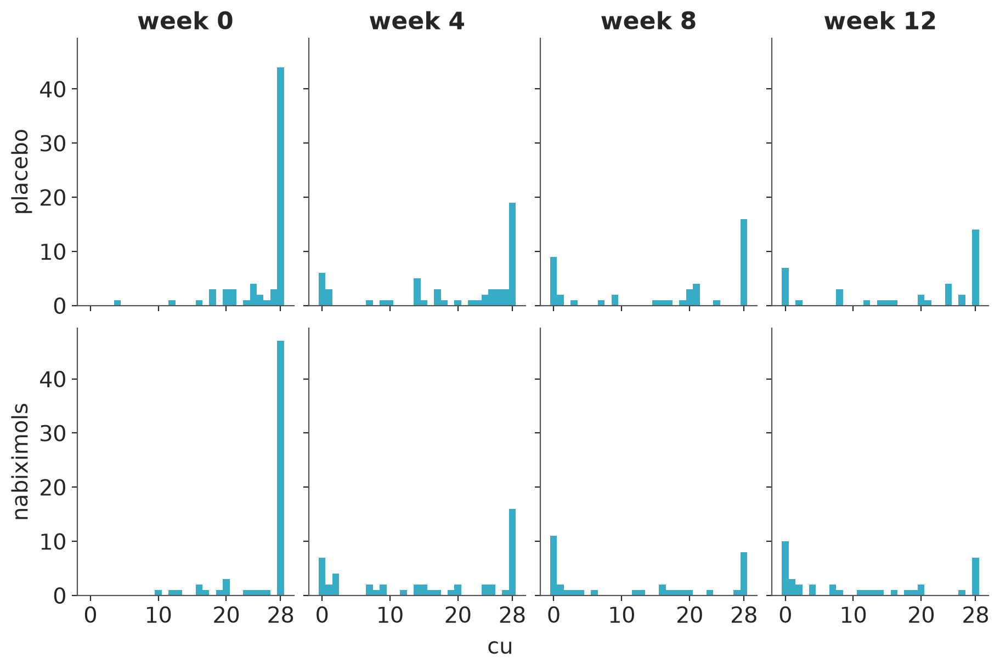
3 Initial models
Mills provided two models with specified priors. The first one is a normal regression model with varying intercept for each participant (id).
mod_normal = bmb.Model(
"cu ~ group*week + (1|id)",
cu_df,
priors={
"Intercept": bmb.Prior("Normal", mu=14, sigma=1.5),
"group": bmb.Prior("Normal", mu=0, sigma=11),
"week": bmb.Prior("Normal", mu=0, sigma=11),
"group:week": bmb.Prior("Normal", mu=0, sigma=11),
"1|id": bmb.Prior("Normal", mu=0, sigma=bmb.Prior("HalfCauchy", beta=2)),
}
)
idata_normal = mod_normal.fit(random_seed=SEED, idata_kwargs={"log_likelihood": True})
mod_normal.predict(idata_normal, kind="response")Initializing NUTS using jitter+adapt_diag...
Multiprocess sampling (4 chains in 4 jobs)
NUTS: [sigma, Intercept, group, week, group:week, 1|id_sigma, 1|id_offset]/home/osvaldo/anaconda3/envs/bwb/lib/python3.14/site-packages/rich/live.py:260: UserWarning: install "ipywidgets"
for Jupyter support
warnings.warn('install "ipywidgets" for Jupyter support')
/home/osvaldo/anaconda3/envs/bwb/lib/python3.14/site-packages/pymc/sampling/mcmc.py:1163: FutureWarning: Passing `log_likelihood` via `idata_kwargs` is deprecated and will be removed in future versions. Call `pm.compute_log_likelihood(idata)` instead.
return _sample_return(
Sampling 4 chains for 1_000 tune and 1_000 draw iterations (4_000 + 4_000 draws total) took 8 seconds.The second provided model is binomial model with the number of trials being \(28\) for each outcome (cu).
mod_binomial = bmb.Model(
"p(cu, set) ~ group*week + (1|id)",
cu_df,
family="binomial",
priors={
"Intercept": bmb.Prior("Normal", mu=0, sigma=1.5),
"group": bmb.Prior("Normal", mu=0, sigma=1),
"week": bmb.Prior("Normal", mu=0, sigma=1),
"group:week": bmb.Prior("Normal", mu=0, sigma=1),
"1|id": bmb.Prior("Normal", mu=0, sigma=bmb.Prior("HalfCauchy", beta=2)),
}
)
# Add trials info
mod_binomial.set_alias({"p(cu, set)":"cu"})
idata_binomial = mod_binomial.fit( random_seed=SEED, idata_kwargs={"log_likelihood": True})
mod_binomial.predict(idata_binomial, kind="response")Initializing NUTS using jitter+adapt_diag...
Multiprocess sampling (4 chains in 4 jobs)
NUTS: [Intercept, group, week, group:week, 1|id_sigma, 1|id_offset]/home/osvaldo/anaconda3/envs/bwb/lib/python3.14/site-packages/rich/live.py:260: UserWarning: install "ipywidgets"
for Jupyter support
warnings.warn('install "ipywidgets" for Jupyter support')
/home/osvaldo/anaconda3/envs/bwb/lib/python3.14/site-packages/pymc/sampling/mcmc.py:1163: FutureWarning: Passing `log_likelihood` via `idata_kwargs` is deprecated and will be removed in future versions. Call `pm.compute_log_likelihood(idata)` instead.
return _sample_return(
Sampling 4 chains for 1_000 tune and 1_000 draw iterations (4_000 + 4_000 draws total) took 15 seconds.
The rhat statistic is larger than 1.01 for some parameters. This indicates problems during sampling. See https://arxiv.org/abs/1903.08008 for details
The effective sample size per chain is smaller than 100 for some parameters. A higher number is needed for reliable rhat and ess computation. See https://arxiv.org/abs/1903.08008 for detailsMills compared the models using PSIS-LOO and asked is this valid:
az.compare({"normal": idata_normal, "binomial": idata_binomial})/home/osvaldo/anaconda3/envs/bwb/lib/python3.14/site-packages/arviz_stats/loo/helper_loo.py:1146: UserWarning: Estimated shape parameter of Pareto distribution is greater than 0.70 for one or more samples. You should consider using a more robust model, this is because importance sampling is less likely to work well if the marginal posterior and LOO posterior are very different. This is more likely to happen with a non-robust model and highly influential observations.
warnings.warn(
/home/osvaldo/anaconda3/envs/bwb/lib/python3.14/site-packages/arviz_stats/loo/helper_loo.py:1146: UserWarning: Estimated shape parameter of Pareto distribution is greater than 0.70 for one or more samples. You should consider using a more robust model, this is because importance sampling is less likely to work well if the marginal posterior and LOO posterior are very different. This is more likely to happen with a non-robust model and highly influential observations.
warnings.warn(| rank | elpd_diff | dse | p_worse | diag_diff | diag_elpd | p | elpd | se | weight | |
|---|---|---|---|---|---|---|---|---|---|---|
| normal | 0 | 0.0 | 0.0 | NaN | 11 k̂ > 0.70 | 90.2 | -1320.0 | 12.0 | 0.36 | |
| binomial | 1 | -300.0 | 120.0 | 1.0 | 104 k̂ > 0.70 | 576.1 | -1600.0 | 130.0 | 0.64 |
4 Comparison of discrete and continuous models
At this point I ignore the fact that there many high Pareto-\(k\) values indicating unreliable PSIS-LOO estimates, and first discuss comparison of predictive probabilities and predictive probability densities.
I pick the id=2 and compute the posterior predictive probability of each possible outcome \((0,1,2,\ldots,28)\). At this point we don’t need to consider LOO-CV issues, and can focus on comparison of posterior predictive probabilities. The following plot shows the area of each bar is equal to the probability of corresponding count outcome and these probabilities sum to 1. The grey bar illustrates the posterior predictive probability of cu=12.
cu_values = np.arange(0, 29)
row = cu_df.iloc[1].drop("cu")
cu_df_predi = pd.DataFrame([row] * len(cu_values)).reset_index(drop=True)
cu_df_predi["cu"] = cu_values
cu_obs = int(cu_df.iloc[1]["cu"])
idata_predi = mod_binomial.predict(
idata_binomial,
data=cu_df_predi,
kind="response",
inplace=False,
)
mod_binomial.compute_log_likelihood(idata_predi, data=cu_df_predi)
log_lik = az.extract(idata_predi, group="log_likelihood")
S = log_lik.sizes["sample"]
p = np.exp(log_lik).reduce(logsumexp, dim="sample") - np.log(S)
predi = pd.DataFrame({"cu": cu_values, "p": p})
_, ax = plt.subplots(figsize=(8, 4))
ax.bar(predi["cu"], predi["p"], width=1, color="white", edgecolor="C0", linewidth=0.8)
ax.bar(cu_obs, predi.loc[predi["cu"] == cu_obs, "p"].values[0],
width=1, color="lightgrey", edgecolor="C0", linewidth=0.8)
ax.set(xlabel="cu", ylabel="Probability", xlim=(-0.5, 28.5));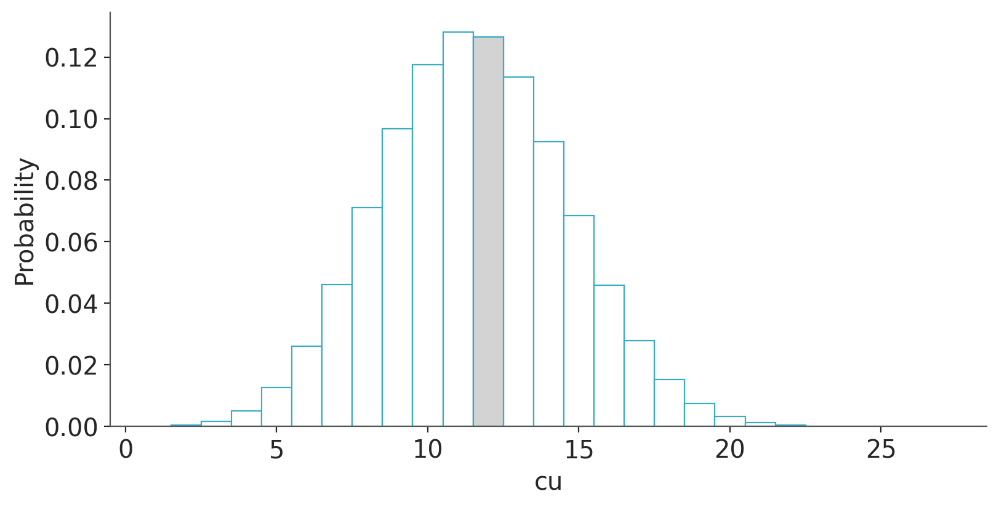
In case of normal model, the observation model is continuous, and we can compute posterior predictive densities. The following plot shows the predictive density and grey line at cu=12 with end of line corresponding to density at cu=12.
cu_values = np.arange(-15, 40, 0.5)
row = cu_df.iloc[1].drop("cu")
cu_df_predi = pd.DataFrame([row] * len(cu_values)).reset_index(drop=True)
cu_df_predi["cu"] = cu_values
cu_obs = int(cu_df.iloc[1]["cu"])
idata_predi = mod_normal.predict(
idata_normal,
data=cu_df_predi,
kind="response",
inplace=False,
)
mod_normal.compute_log_likelihood(idata_predi, data=cu_df_predi)
log_lik = az.extract(idata_predi, group="log_likelihood")
p = np.exp(log_lik).reduce(logsumexp, dim="sample") - np.log(S)
#predi = pd.DataFrame({"cu": cu_values, "p": p})
_, ax = plt.subplots(figsize=(7, 4))
ax.plot(cu_df_predi["cu"], p)
ax.vlines(12, 0, p[cu_values == 12].item(), color="grey", linestyle="--")
ax.set(xlabel="cu", ylabel="Density");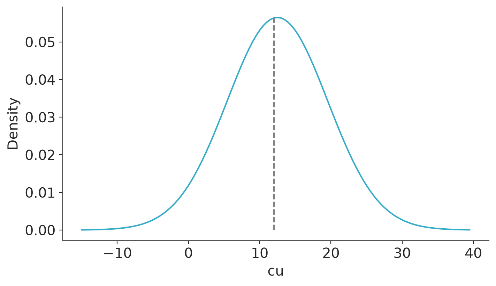
We can’t compare probabilities and densities directly, but we can discretize the density to get probabilities. As the outcomes are integers \((0,1,2,\ldots,28)\), we can compute probabilities for intervals \(((-0.5, 0.5), (0.5,1.5), (1.5,2.5),\ldots,(27.5,28.5))\). The following plot shows the vertical lines for the edges of these intervals.
# Compute densities at interval edges
cu_edges = np.arange(-0.5, 29.5, 1)
row = cu_df.iloc[1].drop("cu")
cu_df_predi = pd.DataFrame([row] * len(cu_edges)).reset_index(drop=True)
cu_df_predi["cu"] = cu_edges
cu_obs = int(cu_df.iloc[1]["cu"])
idata_predi = mod_normal.predict(
idata_normal,
data=cu_df_predi,
kind="response",
inplace=False,
)
mod_normal.compute_log_likelihood(idata_predi, data=cu_df_predi)
log_lik = az.extract(idata_predi, group="log_likelihood")
p2 = np.exp(log_lik).reduce(logsumexp, dim="sample") - np.log(S)
fig, ax = plt.subplots(figsize=(7, 4))
ax.plot(cu_df_predi["cu"], p2)
ax.vlines(cu_edges, 0, p2)
ax.vlines(12, 0, p[cu_values == 12].item(), color="grey", linestyle="--")
ax.set(xlabel="cu", ylabel="Density");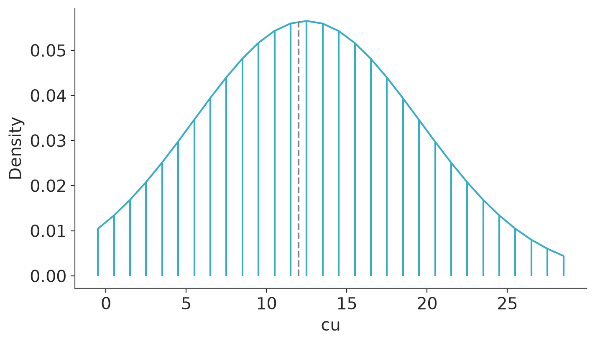
We can then integrate the density over the interval. For example, integrate predictive density from \(11.5\) to \(12.5\) to get a probability that \(11.5 < cu < 12.5\) (it doesn’t matter here if the interval ends are open or closed). To simplify the computation, we approximate the density as piecewise constant function shown in the next plot.
# Compute densities at interval centers
cu_centers = np.arange(0, 29, 1)
row = cu_df.iloc[1].drop("cu")
cu_df_predi = pd.DataFrame([row] * len(cu_centers)).reset_index(drop=True)
cu_df_predi["cu"] = cu_centers
cu_obs = int(cu_df.iloc[1]["cu"])
idata_predi = mod_normal.predict(
idata_normal,
data=cu_df_predi,
kind="response",
inplace=False,
)
mod_normal.compute_log_likelihood(idata_predi, data=cu_df_predi)
log_lik = az.extract(idata_predi, group="log_likelihood")
p3 = np.exp(log_lik).reduce(logsumexp, dim="sample") - np.log(S)
_, ax = plt.subplots(figsize=(7, 4))
ax.bar(cu_df_predi["cu"], p3, alpha=0.4)
ax.plot(cu_df_predi["cu"], p3, color="C0")
ax.vlines(12, 0, p[cu_values == 12].item(), color="grey", linestyle="--")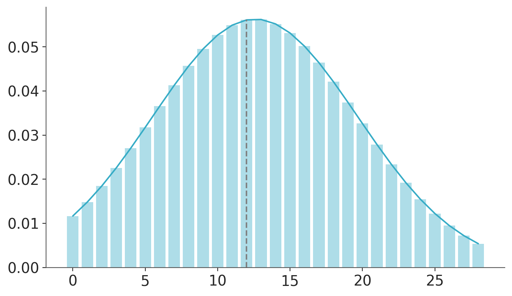
Now the probability of each interval is approximated by the height times the width of a bar. The height is the density in the middle of the interval and width of the bar is 1, and thus the probability value is the same as the density value! In this case this is simple as the counts are integers and the distance between counts is 1. The following plot shows the probability of cu=12.
_, ax = plt.subplots(figsize=(7, 4))
ax.bar(cu_df_predi["cu"], p3, alpha=0.4)
ax.plot(cu_df_predi["cu"], p3, color="C0")
ax.fill_between([11.5, 12.5], 0, p3[12], color="lightgray")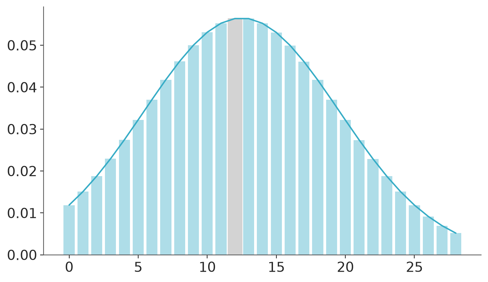
Thus, in this case, the LOO-ELPD comparison is valid.
The normal model predictions are not constrained between \(0\) and \(28\) (or \(-0.5\) and \(28.5\)), and thus the probabilities for cu \(\in (0,1,2,\ldots,28)\) do not necessarily sum to 1.
print(f"Sum of probabilities: {p3.sum():.3f}")Sum of probabilities: 0.956We could switch to truncated normal, but for this data, it would not work well, and as we have better options, I skip illustration of that.
Before continuing with better models, I illustrate the case where the integration interval is not 1, and the comparison would require more work. It is common with continuous targets to normalize the target to have zero mean and unit standard deviation.
cu_df['cu_scaled'] = (cu_df['cu'] - cu_df['cu'].mean()) / cu_df['cu'].std()Fit the normal model with scaled target.
mod_normal_scaled = bmb.Model(
"cu_scaled ~ group*week + (1|id)",
cu_df,
priors={
"Intercept": bmb.Prior("Normal", mu=0, sigma=1.5),
"group": bmb.Prior("Normal", mu=0, sigma=11),
"week": bmb.Prior("Normal", mu=0, sigma=11),
"group:week": bmb.Prior("Normal", mu=0, sigma=11),
"1|id": bmb.Prior("Normal", mu=0, sigma=bmb.Prior("HalfCauchy", beta=2)),
}
)
idata_normal_scaled = mod_normal_scaled.fit(idata_kwargs={"log_likelihood": True}, random_seed=SEED)Initializing NUTS using jitter+adapt_diag...
Multiprocess sampling (4 chains in 4 jobs)
NUTS: [sigma, Intercept, group, week, group:week, 1|id_sigma, 1|id_offset]/home/osvaldo/anaconda3/envs/bwb/lib/python3.14/site-packages/rich/live.py:260: UserWarning: install "ipywidgets"
for Jupyter support
warnings.warn('install "ipywidgets" for Jupyter support')
/home/osvaldo/anaconda3/envs/bwb/lib/python3.14/site-packages/pymc/sampling/mcmc.py:1163: FutureWarning: Passing `log_likelihood` via `idata_kwargs` is deprecated and will be removed in future versions. Call `pm.compute_log_likelihood(idata)` instead.
return _sample_return(
Sampling 4 chains for 1_000 tune and 1_000 draw iterations (4_000 + 4_000 draws total) took 8 seconds.Now the densities for the scaled target are much higher, and the scaled model seems to be much better.
az.compare({"normal": idata_normal, "normal_scaled": idata_normal_scaled})/home/osvaldo/anaconda3/envs/bwb/lib/python3.14/site-packages/arviz_stats/loo/helper_loo.py:1146: UserWarning: Estimated shape parameter of Pareto distribution is greater than 0.70 for one or more samples. You should consider using a more robust model, this is because importance sampling is less likely to work well if the marginal posterior and LOO posterior are very different. This is more likely to happen with a non-robust model and highly influential observations.
warnings.warn(
/home/osvaldo/anaconda3/envs/bwb/lib/python3.14/site-packages/arviz_stats/loo/helper_loo.py:1146: UserWarning: Estimated shape parameter of Pareto distribution is greater than 0.70 for one or more samples. You should consider using a more robust model, this is because importance sampling is less likely to work well if the marginal posterior and LOO posterior are very different. This is more likely to happen with a non-robust model and highly influential observations.
warnings.warn(| rank | elpd_diff | dse | p_worse | diag_diff | diag_elpd | p | elpd | se | weight | |
|---|---|---|---|---|---|---|---|---|---|---|
| normal_scaled | 0 | 0.0 | 0.0 | NaN | 5 k̂ > 0.70 | 90.0 | -400.0 | 12.0 | 1.0 | |
| normal | 1 | -915.0 | 1.1 | 1.0 | 11 k̂ > 0.70 | 90.2 | -1320.0 | 12.0 | 0.0 |
However to make a fair comparison, we need to take into account the scaling we used. To get the probabilities for integer counts, the densities need to be multiplied by the discretization binwidth. Correspondingly in log scale we add \(\log(\text{std})\) to each log-density, and the total adjustment is
adjustment = len(cu_df) * np.log(cu_df['cu'].std())
print(f"Adjustment: {adjustment:.1f}")Adjustment: 914.3Adding this to elpd_loo of the scaled outcome model, makes the two models to have almost the same elpd_loo (the small difference comes from not scaling the priors).
5 Model checking
Let’s get back to the first models. The normal model was better than the binomial model in the LOO comparison, but that doesn’t mean it is a good model. Before trying to solve the high Pareto-\(k\) issues in LOO computation, we can use posterior predictive checking.
Histograms of posterior predictive replicates show that the binomial model predicts lower probability for both \(0\) and \(28\) than what is the observed proportion.
az.plot_ppc_dist(idata_binomial, kind="hist");/home/osvaldo/proyectos/00_BM/arviz-devs/arviz-plots/src/arviz_plots/plots/utils_ppc.py:66: UserWarning: Detected at least one discrete variable.
Consider using plot_ppc variants specific for discrete data, such as plot_ppc_pava or plot_ppc_rootogram.
warn_if_discrete(observed_dist, predictive_dist, kind)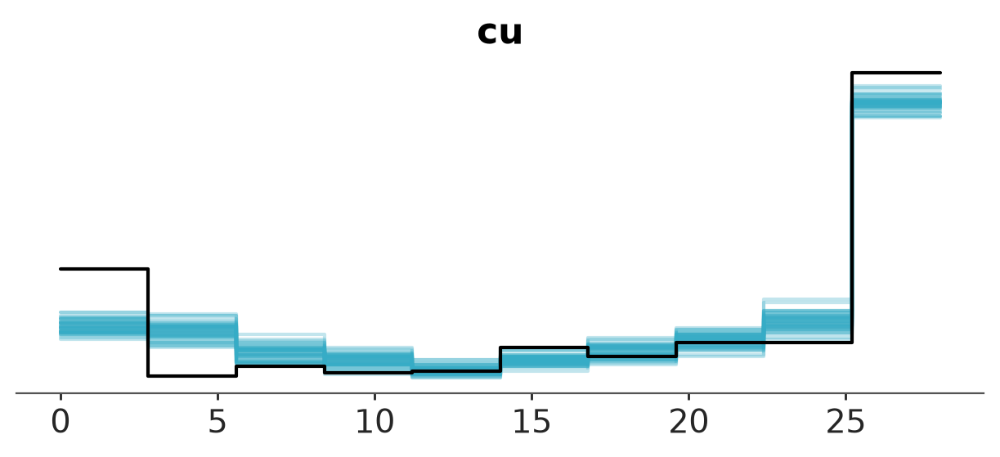
We can also look at the marginal distribution of the data and posterior replicates.
az.plot_ppc_rootogram(idata_binomial, yscale="linear");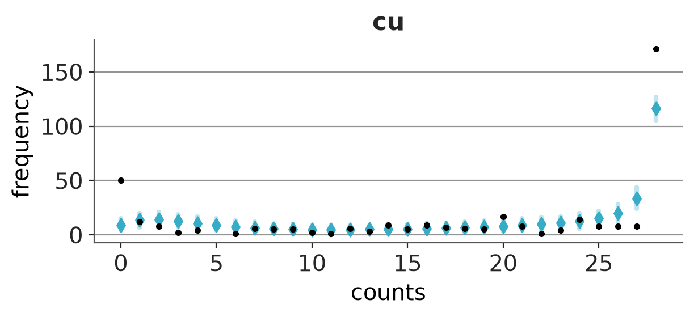
There is a clear mismatch between data and posterior predictive replicates near edges.
This effect can be seen also in LOO-PIT-ECDF calibration check plot which shows that the pointwise predictive distributions are too narrow.
az.plot_loo_pit(idata_binomial)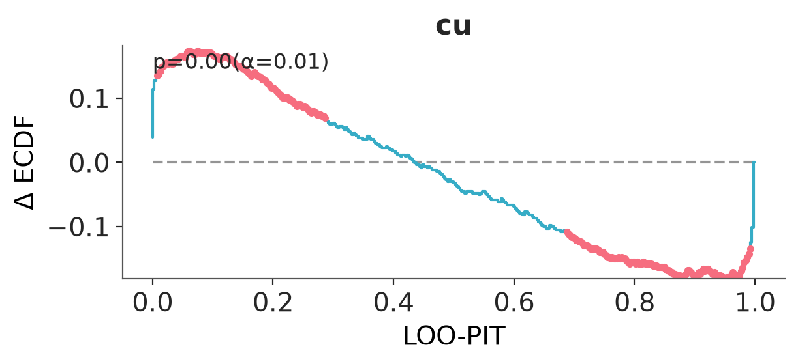
We see that binomial model has too many PIT values near \(0\) and \(1\), which indicates the posterior predictive intervals are too narrow, and the model is not appropriately handling the overdispersion compared to binomial model, even with included varying intercept term (1 | id).
The normal model posterior predictive replicates look even more different than the observed data, including predicting outcomes less than \(0\) and larger than \(28\), but the higher probability of \(0\) and \(28\) makes the difference that the normal model wins in the LOO comparison.
az.plot_ppc_dist(idata_normal, kind="hist");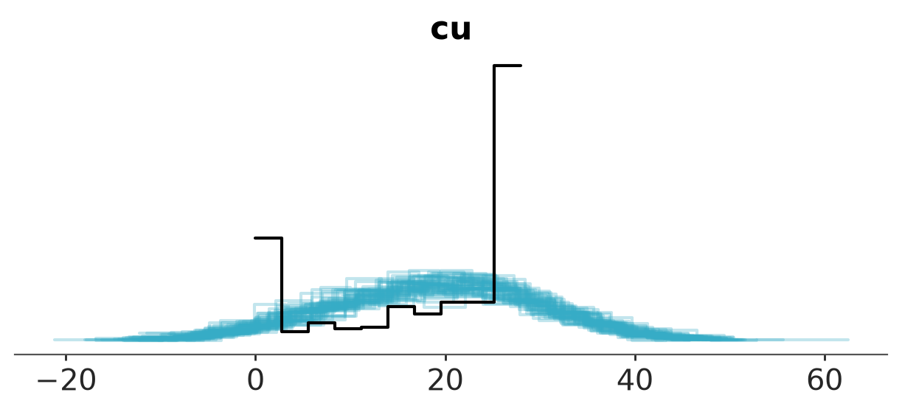
LOO-PIT-ECDF calibration check plot for normal model does indicate some problem with too few PIT values near 0.5, but surprisingly the miscalibration effects at left and right cancel each other out.
az.plot_loo_pit(idata_normal)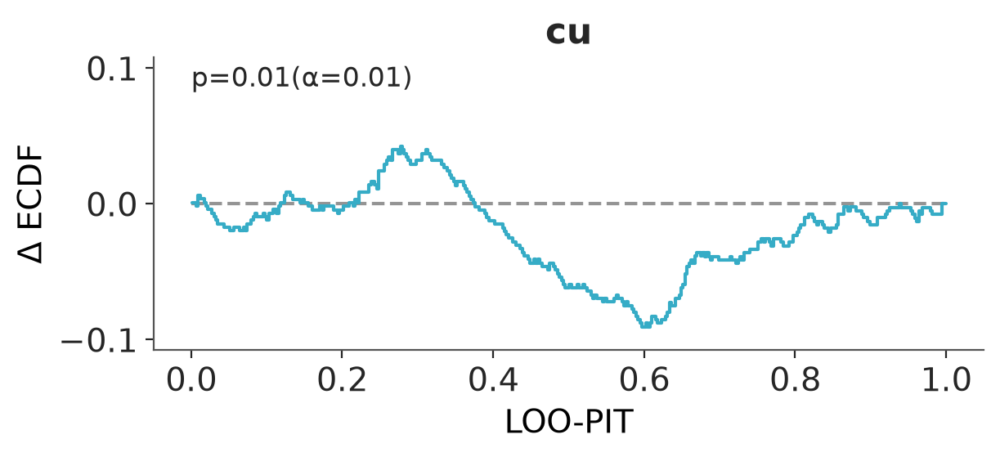
We can also examine PIT values computed by comparing all posterior predictive draws with observations marginally, which in this case show the miscalibration very clearly.
def marginal_pit(x, y):
"""Compute marginal PIT values with randomization for discrete y."""
x_flat = xr.DataArray(x.values.flatten(), dims=["pool"])
y = xr.DataArray(y, dims=["__obs__"])
pit_lower = (x_flat < y).mean("pool")
pit_upper = pit_lower + (x_flat == y).mean("pool")
u = xr.DataArray(np.random.uniform(size=len(y)), dims=["__obs__"])
return pit_lower + u * (pit_upper - pit_lower)
pp_samples = az.extract(idata_normal, group="posterior_predictive")
pit_vals = marginal_pit(pp_samples, cu_df['cu'].values)
pit_dt = xr.DataTree(xr.Dataset({"cu": pit_vals}), name="fd")
az.plot_ecdf_pit(pit_dt, group="fd", sample_dims=["__obs__"])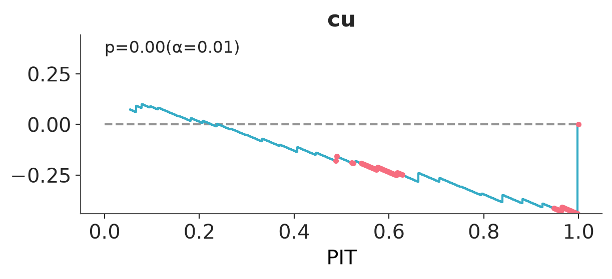
6 Model extension
Binomial model doesn’t have overdispersion term, but the normal model does. How about using beta-binomial model which is an overdispersed version of the binomial model.
mod_betabinomial = bmb.Model(
"p(cu, set) ~ group*week + (1|id)",
cu_df,
family="beta_binomial",
priors={
"Intercept": bmb.Prior("Normal", mu=0, sigma=1.5),
"group": bmb.Prior("Normal", mu=0, sigma=1),
"week": bmb.Prior("Normal", mu=0, sigma=1),
"group:week": bmb.Prior("Normal", mu=0, sigma=1),
"1|id": bmb.Prior("Normal", mu=0, sigma=bmb.Prior("HalfCauchy", beta=2)),
}
)
mod_betabinomial.set_alias({"p(cu, set)":"cu"})
mod_betabinomial.set_alias({"cu": "trials(set)"})
idata_betabinomial = mod_betabinomial.fit( random_seed=SEED, idata_kwargs={"log_likelihood": True})
mod_betabinomial.predict(idata_betabinomial, kind="response", inplace=True)/home/osvaldo/proyectos/00_BM/bambinos/bambi/bambi/models.py:641: UserWarning: The following names do not match any terms, their aliases were not assigned: cu
warnings.warn(
Initializing NUTS using jitter+adapt_diag...
Multiprocess sampling (4 chains in 4 jobs)
NUTS: [kappa, Intercept, group, week, group:week, 1|id_sigma, 1|id_offset]/home/osvaldo/anaconda3/envs/bwb/lib/python3.14/site-packages/rich/live.py:260: UserWarning: install "ipywidgets"
for Jupyter support
warnings.warn('install "ipywidgets" for Jupyter support')
/home/osvaldo/anaconda3/envs/bwb/lib/python3.14/site-packages/pymc/step_methods/hmc/integration.py:135: RuntimeWarning: invalid value encountered in subtract
energy = kinetic - logp/home/osvaldo/anaconda3/envs/bwb/lib/python3.14/site-packages/pymc/sampling/mcmc.py:1163: FutureWarning: Passing `log_likelihood` via `idata_kwargs` is deprecated and will be removed in future versions. Call `pm.compute_log_likelihood(idata)` instead.
return _sample_return(
Sampling 4 chains for 1_000 tune and 1_000 draw iterations (4_000 + 4_000 draws total) took 16 seconds.
/home/osvaldo/anaconda3/envs/bwb/lib/python3.14/site-packages/pytensor/link/numba/dispatch/basic.py:214: UserWarning: Numba will use object mode to run beta_binomial_rv{"(),(),()->()"}'s perform method. Set `pytensor.config.compiler_verbose = True` to see more details.
warnings.warn(az.compare({
"normal": idata_normal,
"binomial": idata_binomial,
"betabinomial": idata_betabinomial
})/home/osvaldo/anaconda3/envs/bwb/lib/python3.14/site-packages/arviz_stats/loo/helper_loo.py:1146: UserWarning: Estimated shape parameter of Pareto distribution is greater than 0.70 for one or more samples. You should consider using a more robust model, this is because importance sampling is less likely to work well if the marginal posterior and LOO posterior are very different. This is more likely to happen with a non-robust model and highly influential observations.
warnings.warn(
/home/osvaldo/anaconda3/envs/bwb/lib/python3.14/site-packages/arviz_stats/loo/helper_loo.py:1146: UserWarning: Estimated shape parameter of Pareto distribution is greater than 0.70 for one or more samples. You should consider using a more robust model, this is because importance sampling is less likely to work well if the marginal posterior and LOO posterior are very different. This is more likely to happen with a non-robust model and highly influential observations.
warnings.warn(
/home/osvaldo/anaconda3/envs/bwb/lib/python3.14/site-packages/arviz_stats/loo/helper_loo.py:1146: UserWarning: Estimated shape parameter of Pareto distribution is greater than 0.70 for one or more samples. You should consider using a more robust model, this is because importance sampling is less likely to work well if the marginal posterior and LOO posterior are very different. This is more likely to happen with a non-robust model and highly influential observations.
warnings.warn(| rank | elpd_diff | dse | p_worse | diag_diff | diag_elpd | p | elpd | se | weight | |
|---|---|---|---|---|---|---|---|---|---|---|
| betabinomial | 0 | 0.0 | 0.0 | NaN | 12 k̂ > 0.70 | 91.7 | -790.0 | 33.0 | 0.89 | |
| normal | 1 | -530.0 | 33.0 | 1.0 | 11 k̂ > 0.70 | 90.2 | -1320.0 | 12.0 | 0.00 | |
| binomial | 2 | -800.0 | 110.0 | 1.0 | 104 k̂ > 0.70 | 576.1 | -1600.0 | 130.0 | 0.11 |
The beta-binomial model beats the normal model big time. The difference is so big that it is unlikely that fixing Pareto-\(k\) warnings matter.
7 Improved LOO computation
Since in case of high Pareto-\(k\) warnings, the estimate is usually optimistic, it is sufficient if we use moment matching for beta-binomial model.
#loo_betabinomial = az.loo(idata_betabinomial, pointwise=True)8 Model checking
The posterior predictive replicates from beta-binomial look very much like the original data.
az.plot_ppc_dist(idata_betabinomial, kind="hist");/home/osvaldo/proyectos/00_BM/arviz-devs/arviz-plots/src/arviz_plots/plots/utils_ppc.py:66: UserWarning: Detected at least one discrete variable.
Consider using plot_ppc variants specific for discrete data, such as plot_ppc_pava or plot_ppc_rootogram.
warn_if_discrete(observed_dist, predictive_dist, kind)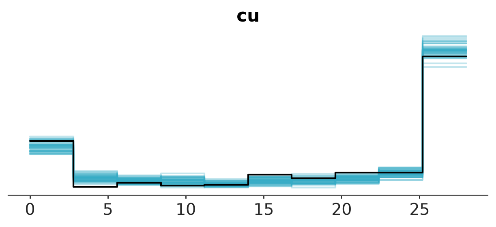
We can also look at the marginal distribution of the data and posterior replicates.
az.plot_ppc_rootogram(idata_betabinomial, yscale="linear");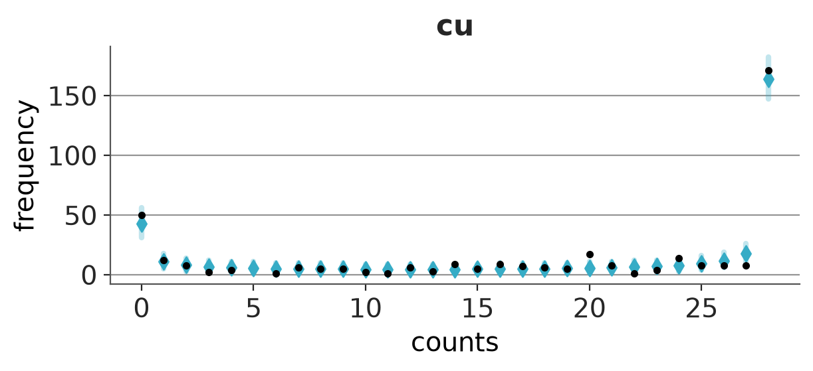
This plot looks much better than with binomial model, although data seem to have more variation.
LOO-PIT-ECDF calibration looks very nice and also better than for the normal model.
az.plot_loo_pit(idata_betabinomial)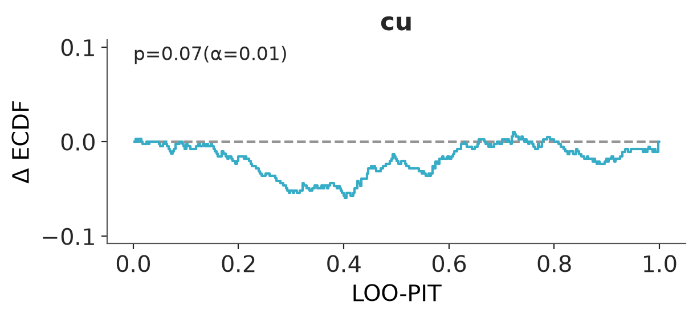
The hierarchical beta-binomial model can also be used to illustrate the importance for using crossvalidation for computing PIT values. If we use the same observations to fit the model and check the model, the double use of the data leads to too many PIT values near 0.5 which shows an S-shape in the PIT-ECDF plot.
az.plot_ppc_pit(idata_betabinomial)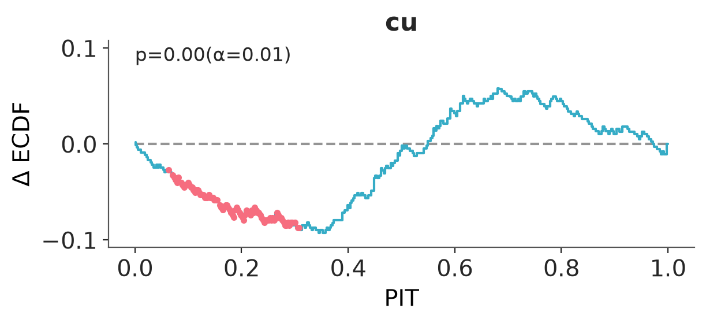
The data included many counts of \(0\) and \(28\), and we can further check whether we might need to include zero-inflation or \(28\)-inflation model component. As illustrated in Roaches case study, PIT’s may sometimes be weak to detect zero-inflation, but reliability diagram can focus there in more detail.
Calibration check with reliability diagram for \(0\) vs others
th = 0
pp_binary = (idata_betabinomial.posterior_predictive["cu"] > th).astype(float)
y_binary = (idata_betabinomial.observed_data["cu"] > th).astype(float)
# We need the log_likelihood and posterior groups for plot_loo_pava to work
# So we create a copy and then update with the binary data
idata_binary = idata_betabinomial.copy(deep=True)
idata_binary["posterior_predictive"]["cu"] = pp_binary
idata_binary["observed_data"]["cu"] = y_binary
az.plot_loo_pava(idata_binary)/home/osvaldo/anaconda3/envs/bwb/lib/python3.14/site-packages/arviz_stats/loo/helper_loo.py:1146: UserWarning: Estimated shape parameter of Pareto distribution is greater than 0.70 for one or more samples. You should consider using a more robust model, this is because importance sampling is less likely to work well if the marginal posterior and LOO posterior are very different. This is more likely to happen with a non-robust model and highly influential observations.
warnings.warn(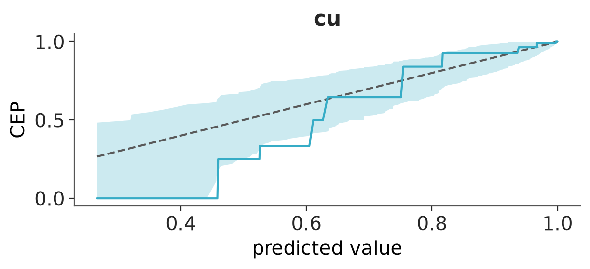
Calibration check with reliability diagram for \(28\) vs others
th = 27
pp_binary = (idata_betabinomial.posterior_predictive["cu"] > th).astype(float)
y_binary = (idata_betabinomial.observed_data["cu"] > th).astype(float)
idata_binary = idata_betabinomial.copy(deep=True)
idata_binary["posterior_predictive"]["cu"] = pp_binary
idata_binary["observed_data"]["cu"] = y_binary
az.plot_loo_pava(idata_binary)/home/osvaldo/anaconda3/envs/bwb/lib/python3.14/site-packages/arviz_stats/loo/helper_loo.py:1146: UserWarning: Estimated shape parameter of Pareto distribution is greater than 0.70 for one or more samples. You should consider using a more robust model, this is because importance sampling is less likely to work well if the marginal posterior and LOO posterior are very different. This is more likely to happen with a non-robust model and highly influential observations.
warnings.warn(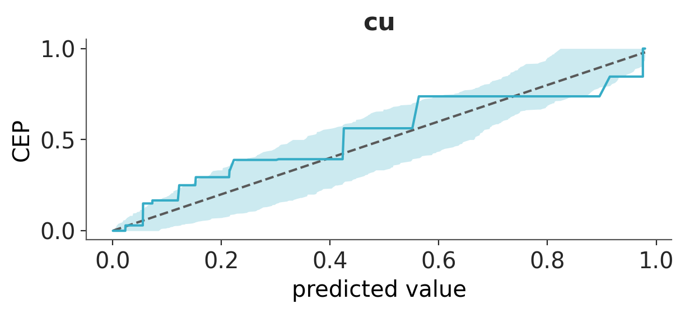
Although the red line did not completely stay within blue envelope, these look good.
9 Prior sensitivity analysis
The priors provided by Mills seems a bit narrow, so I do prior-likelihood sensitivity analysis using powerscaling approach.
mod_betabinomial.compute_log_prior(idata_betabinomial)
az.psense_summary(idata_betabinomial, var_names=["~mu", "~1|id"])We detected potential issues. For more information on how to interpret the results, please check
https://arviz-devs.github.io/EABM/Chapters/Sensitivity_checks.html#interpreting-sensitivity-diagnostics-summary
or read original paper https://doi.org/10.1007/s11222-023-10366-5| prior | likelihood | diagnosis | |
|---|---|---|---|
| kappa | 0.245 | 0.963 | potential prior-data conflict |
| Intercept | 0.312 | 0.607 | potential prior-data conflict |
| group[placebo] | 0.142 | 0.067 | potential prior-data conflict |
| week[4] | 0.369 | 0.536 | potential prior-data conflict |
| week[8] | 0.378 | 0.638 | potential prior-data conflict |
| week[12] | 0.387 | 0.615 | potential prior-data conflict |
| group:week[placebo, 4] | 0.204 | 0.164 | potential prior-data conflict |
| group:week[placebo, 8] | 0.193 | 0.112 | potential prior-data conflict |
| group:week[placebo, 12] | 0.211 | 0.166 | potential prior-data conflict |
| 1|id_sigma | 0.143 | 0.705 | potential prior-data conflict |
There are prior-data conflicts for all global parameters. It is possible that the priors had been chosen based on substantial prior information and then the posterior should be influenced by the prior, too, and the conflict is not necessarily a problem.
10 Alternative priors
However, I decided to try wider priors, especially as the data seem to be quite informative
mod_betabinomial2 = bmb.Model(
"p(cu, set) ~ group*week + (1|id)",
cu_df,
family="beta_binomial",
priors={
"Intercept": bmb.Prior("Normal", mu=0, sigma=5),
"kappa": bmb.Prior("HalfCauchy", beta=2),
}
)
mod_betabinomial2.set_alias({"p(cu, set)":"cu"})
idata_betabinomial2 = mod_betabinomial2.fit(idata_kwargs={"log_likelihood": True}, random_seed=SEED, chains=1)Initializing NUTS using jitter+adapt_diag...
Sequential sampling (1 chains in 1 job)
NUTS: [kappa, Intercept, group, week, group:week, 1|id_sigma, 1|id_offset]/home/osvaldo/anaconda3/envs/bwb/lib/python3.14/site-packages/rich/live.py:260: UserWarning: install "ipywidgets"
for Jupyter support
warnings.warn('install "ipywidgets" for Jupyter support')
/home/osvaldo/anaconda3/envs/bwb/lib/python3.14/site-packages/pymc/step_methods/hmc/integration.py:135: RuntimeWarning: invalid value encountered in subtract energy = kinetic - logp
/home/osvaldo/anaconda3/envs/bwb/lib/python3.14/site-packages/pymc/sampling/mcmc.py:1163: FutureWarning: Passing `log_likelihood` via `idata_kwargs` is deprecated and will be removed in future versions. Call `pm.compute_log_likelihood(idata)` instead.
return _sample_return(
Sampling 1 chain for 1_000 tune and 1_000 draw iterations (1_000 + 1_000 draws total) took 6 seconds.
Only one chain was sampled, this makes it impossible to run some convergence checksThere are no prior data conflicts.
mod_betabinomial2.compute_log_prior(idata_betabinomial2)
az.psense_summary(idata_betabinomial2, var_names=["~mu", "~1|id"])/home/osvaldo/anaconda3/envs/bwb/lib/python3.14/site-packages/arviz_base/utils.py:149: UserWarning: Items starting with ~: ['mu'] have not been found and will be ignored
warnings.warn(
/home/osvaldo/anaconda3/envs/bwb/lib/python3.14/site-packages/arviz_base/utils.py:149: UserWarning: Items starting with ~: ['mu'] have not been found and will be ignored
warnings.warn(| prior | likelihood | diagnosis | |
|---|---|---|---|
| kappa | 0.041 | 0.819 | ✓ |
| Intercept | 0.044 | 0.343 | ✓ |
| group[placebo] | 0.027 | 0.126 | ✓ |
| week[4] | 0.042 | 0.314 | ✓ |
| week[8] | 0.043 | 0.318 | ✓ |
| week[12] | 0.040 | 0.278 | ✓ |
| group:week[placebo, 4] | 0.029 | 0.138 | ✓ |
| group:week[placebo, 8] | 0.027 | 0.119 | ✓ |
| group:week[placebo, 12] | 0.029 | 0.136 | ✓ |
| 1|id_sigma | 0.023 | 0.559 | ✓ |
We can also do LOO comparison, which indicates that the wider priors provide a better predictive performance.
az.compare({
"betabinomial": idata_betabinomial,
"betabinomial2": idata_betabinomial2
})/home/osvaldo/anaconda3/envs/bwb/lib/python3.14/site-packages/arviz_stats/loo/helper_loo.py:1146: UserWarning: Estimated shape parameter of Pareto distribution is greater than 0.70 for one or more samples. You should consider using a more robust model, this is because importance sampling is less likely to work well if the marginal posterior and LOO posterior are very different. This is more likely to happen with a non-robust model and highly influential observations.
warnings.warn(
/home/osvaldo/anaconda3/envs/bwb/lib/python3.14/site-packages/arviz_stats/loo/helper_loo.py:1146: UserWarning: Estimated shape parameter of Pareto distribution is greater than 0.67 for one or more samples. You should consider using a more robust model, this is because importance sampling is less likely to work well if the marginal posterior and LOO posterior are very different. This is more likely to happen with a non-robust model and highly influential observations.
warnings.warn(| rank | elpd_diff | dse | p_worse | diag_diff | diag_elpd | p | elpd | se | weight | |
|---|---|---|---|---|---|---|---|---|---|---|
| betabinomial2 | 0 | 0.0 | 0.0 | NaN | 31 k̂ > 0.67 | 97.7 | -780.0 | 35.0 | 0.89 | |
| betabinomial | 1 | -10.0 | 4.9 | 0.98 | 12 k̂ > 0.70 | 91.7 | -790.0 | 33.0 | 0.11 |
11 Model refinement
All the above models included the baseline week=0 in the interaction term with group, which does not make sense as the group should not affect the baseline. I modify the data and models by moving the baseline week=0 cus to be pre-treatment covariate.
# Filter out week 0 and create baseline covariate
cu_df_b = cu_df[cu_df['week'] != 0].copy()
cu_df_b['week'] = cu_df_b['week'].cat.remove_unused_categories()
# Create baseline covariate
baseline = cu_df[cu_df['week'] == 0][['id', 'cu']].rename(columns={'cu': 'cu_baseline'})
cu_df_b = cu_df_b.merge(baseline, on='id', how='left')
cu_df_b = cu_df_b.reset_index(drop=True)
mod_betabinomial2b = bmb.Model(
"p(cu, set) ~ group*week + cu_baseline + (1|id)",
cu_df_b,
family="beta_binomial",
priors={
"Intercept": bmb.Prior("Normal", mu=0, sigma=3),
"group": bmb.Prior("Normal", mu=0, sigma=3),
"week": bmb.Prior("Normal", mu=0, sigma=3),
"group:week": bmb.Prior("Normal", mu=0, sigma=3),
"cu_baseline": bmb.Prior("Normal", mu=0, sigma=3),
}
)
mod_betabinomial2b.set_alias({"p(cu, set)":"cu"})
idata_betabinomial2b = mod_betabinomial2b.fit(idata_kwargs={"log_likelihood": True}, random_seed=SEED)
mod_betabinomial2b.predict(idata_betabinomial2b, kind="response", inplace=True)Initializing NUTS using jitter+adapt_diag...
Multiprocess sampling (4 chains in 4 jobs)
NUTS: [kappa, Intercept, group, week, group:week, cu_baseline, 1|id_sigma, 1|id_offset]/home/osvaldo/anaconda3/envs/bwb/lib/python3.14/site-packages/rich/live.py:260: UserWarning: install "ipywidgets"
for Jupyter support
warnings.warn('install "ipywidgets" for Jupyter support')
/home/osvaldo/anaconda3/envs/bwb/lib/python3.14/site-packages/pymc/step_methods/hmc/integration.py:135: RuntimeWarning: invalid value encountered in subtract
energy = kinetic - logp
/home/osvaldo/anaconda3/envs/bwb/lib/python3.14/site-packages/pymc/step_methods/hmc/integration.py:135: RuntimeWarning: invalid value encountered in subtract
energy = kinetic - logp/home/osvaldo/anaconda3/envs/bwb/lib/python3.14/site-packages/pymc/sampling/mcmc.py:1163: FutureWarning: Passing `log_likelihood` via `idata_kwargs` is deprecated and will be removed in future versions. Call `pm.compute_log_likelihood(idata)` instead.
return _sample_return(
Sampling 4 chains for 1_000 tune and 1_000 draw iterations (4_000 + 4_000 draws total) took 14 seconds.
/home/osvaldo/anaconda3/envs/bwb/lib/python3.14/site-packages/pytensor/link/numba/dispatch/basic.py:214: UserWarning: Numba will use object mode to run beta_binomial_rv{"(),(),()->()"}'s perform method. Set `pytensor.config.compiler_verbose = True` to see more details.
warnings.warn(To compare the new model against the previous ones, we exclude the pointwise elpds for week 0 from idata_betabinomial2.
loo2 = az.loo(idata_betabinomial2, pointwise=True)
loo2b = az.loo(idata_betabinomial2b, pointwise=True)
mask = cu_df["week"] != 0
filtered = deepcopy(loo2)
filtered["elpd_loo"] = loo2.elpd_i.values[mask].sum()
filtered["se"] = np.sqrt(mask.sum() * np.var(loo2.elpd_i.values[mask]))
filtered["elpd_i"] = loo2.elpd_i.isel(__obs__=np.where(mask)[0])
filtered["n_samples"] = mask.sum()
az.compare({"mod_betabinomial2": filtered, "mod_betabinomial2b": loo2b})[["elpd_diff", "dse"]]/home/osvaldo/anaconda3/envs/bwb/lib/python3.14/site-packages/arviz_stats/loo/helper_loo.py:1146: UserWarning: Estimated shape parameter of Pareto distribution is greater than 0.67 for one or more samples. You should consider using a more robust model, this is because importance sampling is less likely to work well if the marginal posterior and LOO posterior are very different. This is more likely to happen with a non-robust model and highly influential observations.
warnings.warn(
/home/osvaldo/anaconda3/envs/bwb/lib/python3.14/site-packages/arviz_stats/loo/helper_loo.py:1146: UserWarning: Estimated shape parameter of Pareto distribution is greater than 0.70 for one or more samples. You should consider using a more robust model, this is because importance sampling is less likely to work well if the marginal posterior and LOO posterior are very different. This is more likely to happen with a non-robust model and highly influential observations.
warnings.warn(| elpd_diff | dse | |
|---|---|---|
| mod_betabinomial2b | 0.0 | 0.0 |
| mod_betabinomial2 | -30.0 | 9.6 |
By comparing the posterior for kappa, we see that the overdispersion of the beta-binomial in the new model is smaller (smaller kappa means bigger overdispersion).
bb2_kappa = az.summary(idata_betabinomial2, var_names=["kappa"])
bb2b_kappa = az.summary(idata_betabinomial2b, var_names=["kappa"])
pd.concat([bb2_kappa, bb2b_kappa], keys=["betabinomial2", "betabinomial2b"], names=["model"])| mean | sd | eti95_lb | eti95_ub | ess_bulk | ess_tail | r_hat | mcse_mean | mcse_sd | ||
|---|---|---|---|---|---|---|---|---|---|---|
| model | ||||||||||
| betabinomial2 | kappa | 1.74 | 0.26 | 1.3 | 2.3 | 687 | 780 | NaN | 0.0098 | 0.0082 |
| betabinomial2b | kappa | 3.68 | 0.68 | 2.5 | 5.2 | 2101 | 2774 | 1.00 | 0.015 | 0.012 |
12 Model checking
The marginal distribution of the posterior replicates matches the data better than earlier models.
az.plot_ppc_rootogram(idata_betabinomial2b, yscale="linear");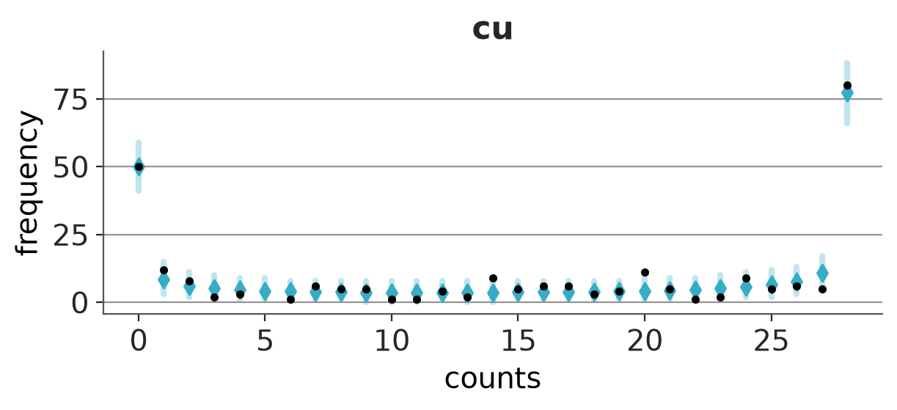
LOO-PIT-ECDF plot looks good:
az.plot_loo_pit(idata_betabinomial2b)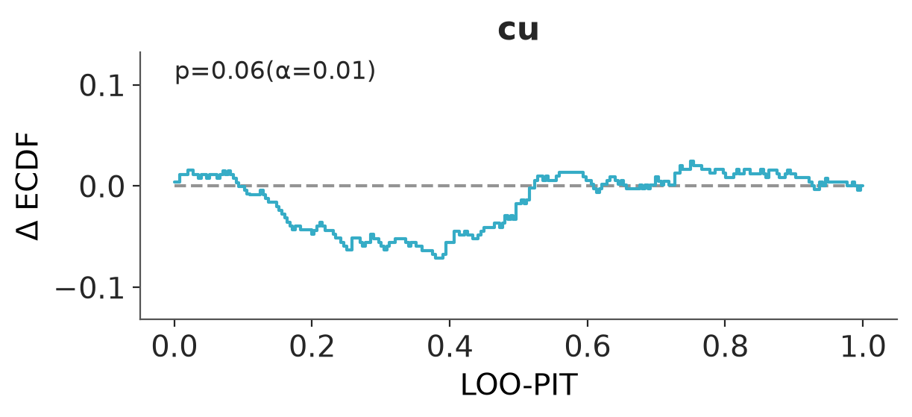
Calibration check with reliability diagrams for \(0\) vs others and \(28\) vs others look better than for the previous model.
th = 0
pp_binary2b = (idata_betabinomial2b.posterior_predictive["cu"] > th).astype(float)
y_binary2b = (idata_betabinomial2b.observed_data["cu"] > th).astype(float)
idata_binary2b = idata_betabinomial2b.copy(deep=True)
idata_binary2b["posterior_predictive"]["cu"] = pp_binary2b
idata_binary2b["observed_data"]["cu"] = y_binary2b
az.plot_loo_pava(idata_binary2b)/home/osvaldo/anaconda3/envs/bwb/lib/python3.14/site-packages/arviz_stats/loo/helper_loo.py:1146: UserWarning: Estimated shape parameter of Pareto distribution is greater than 0.70 for one or more samples. You should consider using a more robust model, this is because importance sampling is less likely to work well if the marginal posterior and LOO posterior are very different. This is more likely to happen with a non-robust model and highly influential observations.
warnings.warn(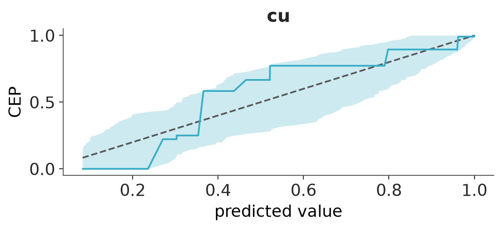
th = 27
pp_binary2b = (idata_betabinomial2b.posterior_predictive["cu"] > th).astype(float)
y_binary2b = (idata_betabinomial2b.observed_data["cu"] > th).astype(float)
idata_binary2b = idata_betabinomial2b.copy(deep=True)
idata_binary2b["posterior_predictive"]["cu"] = pp_binary2b
idata_binary2b["observed_data"]["cu"] = y_binary2b
az.plot_loo_pava(idata_binary2b)/home/osvaldo/anaconda3/envs/bwb/lib/python3.14/site-packages/arviz_stats/loo/helper_loo.py:1146: UserWarning: Estimated shape parameter of Pareto distribution is greater than 0.70 for one or more samples. You should consider using a more robust model, this is because importance sampling is less likely to work well if the marginal posterior and LOO posterior are very different. This is more likely to happen with a non-robust model and highly influential observations.
warnings.warn(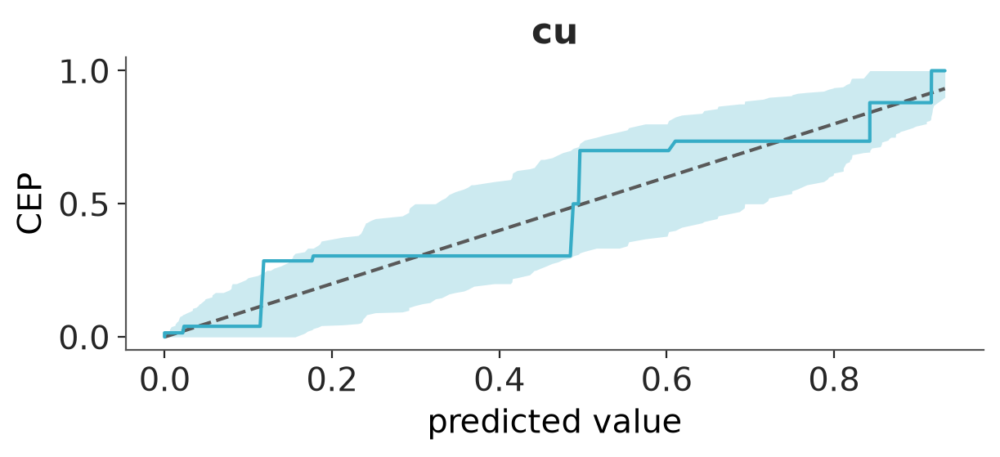
13 Treatment effect
As the treatment is included in interaction term, looking at the univariate posterior marginal is not sufficient for checking whether the treatment helps.
We can examine the effect of the treatment by looking at the posterior predictive distribution and the expectation of the posterior predictive distribution for a new person (new id). For each person we can compare the prediction to the counterfactual case, that is, what if that person would have been in the other treatment group. We can compare the difference from being in the placebo to being in the Nabiximols group.
We start by examining the posterior predictive distribution. We predict cu for a new id=129 given cu_baseline=28 (median value). The distribution is wide as it included the aleatoric uncertainty from the unknown id specific intercept and beta-binomial distribution.
# Create prediction data for new individual
pred_data = []
for group in ['placebo', 'nabiximols']:
for week in [4, 8, 12]:
pred_data.append({
'id': '129',
'group': group,
'week': week,
'cu_baseline': 28,
'set': 28
})
pred_df = pd.DataFrame(pred_data)
# Get posterior predictive samples
idata_pred = mod_betabinomial2b.predict(idata_betabinomial2b, data=pred_df, kind="response", inplace=False, sample_new_groups=True)
# Group samples by each group and week
dicto = {}
for i, group in enumerate(['placebo', 'nabiximols']):
for j, week in enumerate([4, 8, 12]):
idx = i * 3 + j
dicto[f'{group}_{week}'] = idata_pred.posterior_predictive["cu"].sel({"__obs__":idx})
# Plot posterior predictive distributions for each group and week
az.plot_dist(
az.from_dict({"fd":dicto}),
group="fd",
kind="dot",
col_wrap=3,
point_estimate="median",
figure_kwargs={"sharex": True, "figsize": (9, 6)},
)/home/osvaldo/anaconda3/envs/bwb/lib/python3.14/site-packages/pytensor/link/numba/dispatch/basic.py:214: UserWarning: Numba will use object mode to run beta_binomial_rv{"(),(),()->()"}'s perform method. Set `pytensor.config.compiler_verbose = True` to see more details.
warnings.warn(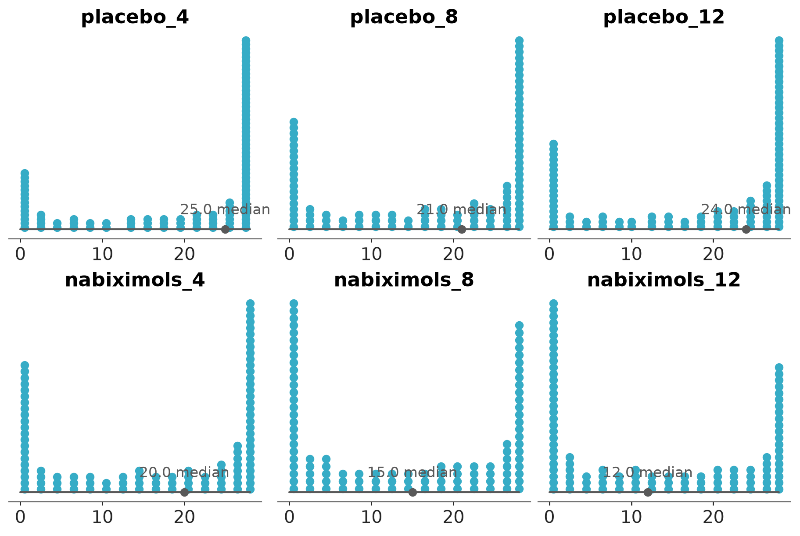
The difference between groups is the biggest in week 12. The next plot shows the comparison of predicted cu between the groups in different weeks.
# Compute differences between groups
dicto_diff = {}
for week in [4, 8, 12]:
dicto_diff[f'week{week}'] = dicto[f'nabiximols_{week}'] - dicto[f'placebo_{week}']
# Plot differences
pc = az.plot_dist(
az.from_dict({"fd":dicto_diff}),
group="fd",
kind="dot",
point_estimate="median",
col_wrap=1,
figure_kwargs={"sharex": True},
)
az.add_lines(pc, 0)
pc.add_title("Difference in cu given placebo vs Nabiximols")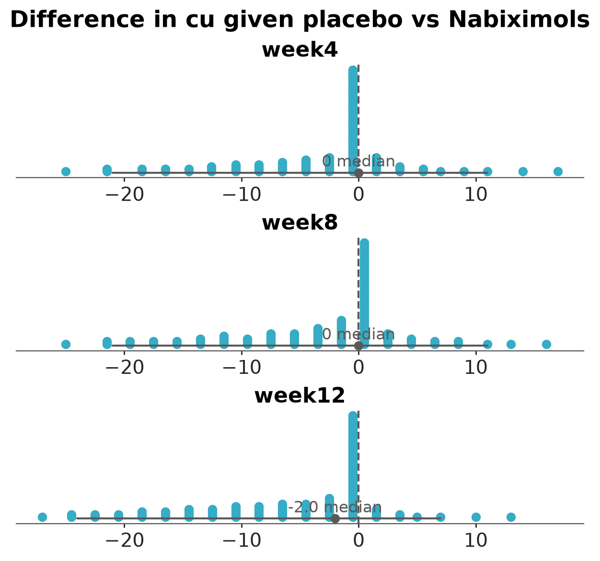
For a new individual the posterior predictive distribution indicates 90% possibility of smaller cu with Nabiximols than with placebo. We have used dot plots with 100 dots, as dot plots are better than KDE and histograms for showing spikes (as here at 0) and make it easy to estimate tail probabilities by counting the dots.
For comparison we now plot:
- A quantile dot plot
- A KDE plot
- A histogram
All these plots do a relativelly good job in showing the difference between groups, but the dot plot is the best for showing the spikes at 0 and for estimating tail probabilities.
diff_week12 = az.from_dict({"fd":dicto_diff})
az.combine_plots(
diff_week12,
plots=[
(az.plot_dist, {"kind": "dot"}),
(az.plot_dist, {"kind": "kde"}),
(az.plot_dist, {"kind": "hist"}),
],
group="fd",
var_names="week12",
figure_kwargs={"figsize": (9, 4)},
)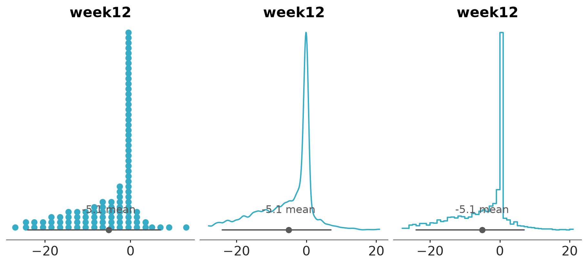
To get more accuracy we can remove the aleatoric uncertainty and focus on expected effect. The following plots shows the expectation of the posterior predictive distribution for cu for a new id=129 given cu_baseline=28 (expectation as in average over many new individuals). The distribution is much narrower as it includes only the epistemic uncertainty, but not the aleatoric uncertainty (using include_group_specific=False excludes the uncertainty in the unknown id specific intercept and using kind="response_params" and then getting the posterior of “mu” gives just the expectation excluding the uncertainty in beta-binomial distribution).
pred_data = []
for group in ['placebo', 'nabiximols']:
for week in [4, 8, 12]:
pred_data.append({
'id': 129,
'group': group,
'week': week,
'cu_baseline': 28,
'set': 28
})
pred_df = pd.DataFrame(pred_data)
idata_epred = mod_betabinomial2b.predict(
idata_betabinomial2b, data=pred_df,
kind="response_params", sample_new_groups=True,
include_group_specific=False,
inplace=False
)
dicto = {}
for i, group in enumerate(['placebo', 'nabiximols']):
for j, week in enumerate([4, 8, 12]):
idx = i * 3 + j
dicto[f'{group}_{week}'] = idata_epred.posterior["mu"].sel({"__obs__": idx}) * 28
# Plot posterior predictive distributions for each group and week
az.plot_dist(
az.from_dict({"fd":dicto}),
group="fd",
kind="dot",
col_wrap=3,
point_estimate="median",
figure_kwargs={"sharex": True, "figsize": (9, 6)},
)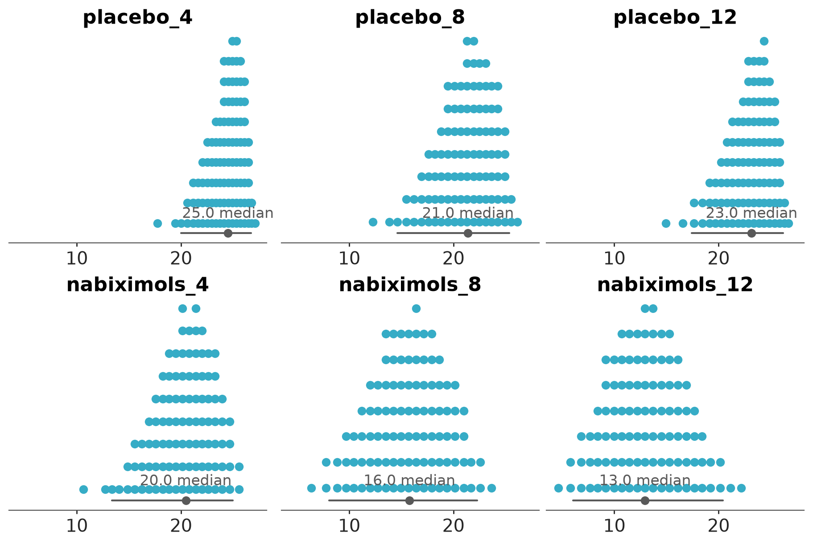
The next plot shows the comparison of expected cu between the groups in different weeks.
# Compute differences in expected values
dicto_diff = {}
for week in [4, 8, 12]:
dicto_diff[f'week{week}'] = dicto[f'nabiximols_{week}'] - dicto[f'placebo_{week}']
# Plot differences
pc = az.plot_dist(
az.from_dict({"fd":dicto_diff}),
group="fd",
kind="dot",
point_estimate="median",
col_wrap=1,
figure_kwargs={"sharex": True},
)
az.add_lines(pc, 0)
pc.add_title("Difference in expected cu given placebo vs Nabiximols")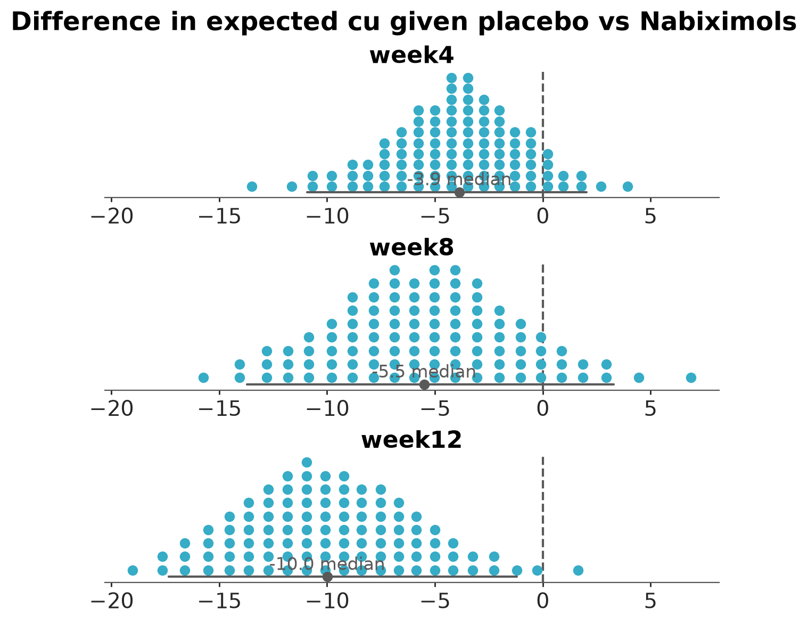
For new individuals the posterior predictive distribution indicates 99% possibility of smaller expected cu with Nabiximols than with placebo.
# Probability that difference is negative (Nabiximols better)
prob_better = (dicto_diff["week12"] < 0).mean()
print(f"Probability Nabiximols reduces cu in week 12: {prob_better:.2f}")Probability Nabiximols reduces cu in week 12: 0.9914 Prior and likelihood sensitivity of treatment effect posteriors
Examining the prior and likelihood sensitivity of parameter posteriors is quick and easy, but eventually we want to examine prior and likelihood sensitivity of our main quantity of interest, which in this case is the treatment effect in different weeks. Making this analysis requires a bit more code as we need to compute the treatment effect posteriors and combine that information with log prior density and log likelihood for the corresponding posterior draws.
Prior-likelihood sensitivity analysis using powerscaling approach for the treatment effect posteriors at weeks 4, 8, and 12
# Compute log_prior for the model
mod_betabinomial2b.compute_log_prior(idata_betabinomial2b)
# Build a DataTree with the treatment effect posteriors and the model's
# log_likelihood and log_prior groups, so psense_summary can compute the
# prior/likelihood sensitivity of the treatment effects at weeks 4, 8, and 12.
idata_trt = xr.DataTree.from_dict({
"posterior": xr.Dataset({
"week4": dicto_diff["week4"],
"week8": dicto_diff["week8"],
"week12": dicto_diff["week12"],
}),
"log_likelihood": idata_betabinomial2b.log_likelihood.to_dataset(),
"log_prior": idata_betabinomial2b.log_prior.to_dataset(),
})
az.plot_psense_dist(idata_trt)
az.psense_summary(idata_trt)| prior | likelihood | diagnosis | |
|---|---|---|---|
| week4 | 0.024 | 0.057 | ✓ |
| week8 | 0.026 | 0.084 | ✓ |
| week12 | 0.026 | 0.068 | ✓ |
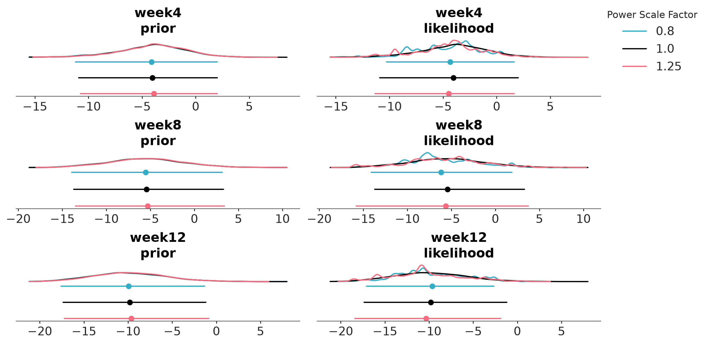
The treatment effect posteriors are not sensitive to prior and are informed by the likelihood.
15 Sensitivity to model choice
Finally we check how much there is difference in the conclusions, if we had used the continuous normal model. We build normal model which matches the beta-binomial model structure.
mod_normal2b = bmb.Model(
"cu ~ group*week + cu_baseline + (1|id)",
cu_df_b,
family="gaussian",
priors={
"Intercept": bmb.Prior("Normal", mu=0, sigma=3),
"group": bmb.Prior("Normal", mu=0, sigma=3),
"week": bmb.Prior("Normal", mu=0, sigma=3),
"group:week": bmb.Prior("Normal", mu=0, sigma=3),
"cu_baseline": bmb.Prior("Normal", mu=0, sigma=3),
}
)
idata_normal2b = mod_normal2b.fit(idata_kwargs={"log_likelihood": True}, random_seed=SEED)
mod_normal2b.predict(idata_normal2b, kind="response", inplace=True)Initializing NUTS using jitter+adapt_diag...
Multiprocess sampling (4 chains in 4 jobs)
NUTS: [sigma, Intercept, group, week, group:week, cu_baseline, 1|id_sigma, 1|id_offset]/home/osvaldo/anaconda3/envs/bwb/lib/python3.14/site-packages/rich/live.py:260: UserWarning: install "ipywidgets"
for Jupyter support
warnings.warn('install "ipywidgets" for Jupyter support')
/home/osvaldo/anaconda3/envs/bwb/lib/python3.14/site-packages/pymc/sampling/mcmc.py:1163: FutureWarning: Passing `log_likelihood` via `idata_kwargs` is deprecated and will be removed in future versions. Call `pm.compute_log_likelihood(idata)` instead.
return _sample_return(
Sampling 4 chains for 1_000 tune and 1_000 draw iterations (4_000 + 4_000 draws total) took 7 seconds.
The rhat statistic is larger than 1.01 for some parameters. This indicates problems during sampling. See https://arxiv.org/abs/1903.08008 for detailsLOO-PIT-ECDF hints slight miscalibration
az.plot_loo_pit(idata_normal2b)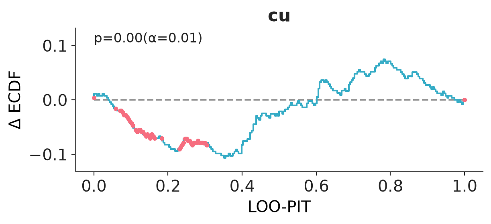
Marginal PIT-ECDF shows clear miscalibration
pp_samples_n2b = az.extract(idata_normal2b, group="posterior_predictive")
pit_vals = marginal_pit(pp_samples_n2b, cu_df_b['cu'].values)
pit_dt = xr.DataTree(xr.Dataset({"cu": pit_vals}), name="fd")
az.plot_ecdf_pit(pit_dt, group="fd", sample_dims=["__obs__"])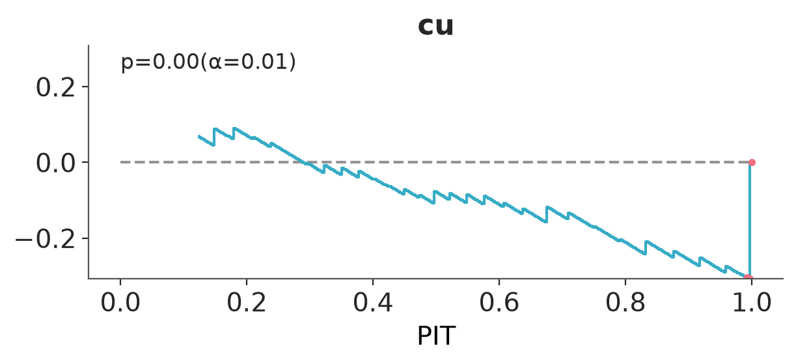
The beta-binomial model beats the normal model big time.
az.compare({"normal2b": idata_normal2b, "betabinomial2b": idata_betabinomial2b})[["elpd_diff", "dse"]]/home/osvaldo/anaconda3/envs/bwb/lib/python3.14/site-packages/arviz_stats/loo/helper_loo.py:1146: UserWarning: Estimated shape parameter of Pareto distribution is greater than 0.70 for one or more samples. You should consider using a more robust model, this is because importance sampling is less likely to work well if the marginal posterior and LOO posterior are very different. This is more likely to happen with a non-robust model and highly influential observations.
warnings.warn(
/home/osvaldo/anaconda3/envs/bwb/lib/python3.14/site-packages/arviz_stats/loo/helper_loo.py:1146: UserWarning: Estimated shape parameter of Pareto distribution is greater than 0.70 for one or more samples. You should consider using a more robust model, this is because importance sampling is less likely to work well if the marginal posterior and LOO posterior are very different. This is more likely to happen with a non-robust model and highly influential observations.
warnings.warn(| elpd_diff | dse | |
|---|---|---|
| betabinomial2b | 0.0 | 0.0 |
| normal2b | -270.0 | 23.0 |
Next we build models predicting total cu for all weeks (except 0), by dropping week covariate.
cu_df_c = cu_df_b.groupby(['id', 'group', 'cu_baseline']).agg({
'cu': 'sum',
'set': 'sum'
}).reset_index()
cu_df_c = cu_df_c.rename(columns={'cu': 'cu_total', 'set': 'set_total'})
mod_normal2c = bmb.Model(
"cu_total ~ group + cu_baseline",
cu_df_c,
priors={
"Intercept": bmb.Prior("Normal", mu=0, sigma=3),
"group": bmb.Prior("Normal", mu=0, sigma=3),
"cu_baseline": bmb.Prior("Normal", mu=0, sigma=3),
}
)
idata_normal2c = mod_normal2c.fit(random_seed=SEED)Initializing NUTS using jitter+adapt_diag...
Multiprocess sampling (4 chains in 4 jobs)
NUTS: [sigma, Intercept, group, cu_baseline]/home/osvaldo/anaconda3/envs/bwb/lib/python3.14/site-packages/rich/live.py:260: UserWarning: install "ipywidgets"
for Jupyter support
warnings.warn('install "ipywidgets" for Jupyter support')
Sampling 4 chains for 1_000 tune and 1_000 draw iterations (4_000 + 4_000 draws total) took 5 seconds.mod_betabinomial2c = bmb.Model(
"p(cu_total, set_total) ~ group + cu_baseline",
cu_df_c,
family="beta_binomial",
priors={
"Intercept": bmb.Prior("Normal", mu=0, sigma=3),
"group": bmb.Prior("Normal", mu=0, sigma=3),
"cu_baseline": bmb.Prior("Normal", mu=0, sigma=3),
}
)
mod_betabinomial2c.set_alias({"p(cu_total, set_total)":"cu_total"})
idata_betabinomial2c = mod_betabinomial2c.fit(random_seed=SEED)Initializing NUTS using jitter+adapt_diag...
Multiprocess sampling (4 chains in 4 jobs)
NUTS: [kappa, Intercept, group, cu_baseline]/home/osvaldo/anaconda3/envs/bwb/lib/python3.14/site-packages/rich/live.py:260: UserWarning: install "ipywidgets"
for Jupyter support
warnings.warn('install "ipywidgets" for Jupyter support')
Sampling 4 chains for 1_000 tune and 1_000 draw iterations (4_000 + 4_000 draws total) took 7 seconds.We’re not able to compare the models predicting total count in 12 weeks and models predicting counts in three 4-week period using elpd_loo as the targets are different.
We plot here the difference either for the last 4 week period or for the all weeks depending on the model.
pred_12 = pd.DataFrame([
{'id': 129, 'group': 'placebo', 'week': 12, 'cu_baseline': 28, 'set': 28},
{'id': 129, 'group': 'nabiximols', 'week': 12, 'cu_baseline': 28, 'set': 28}
])
pred_c = pd.DataFrame([
{'id': 129, 'group': 'placebo', 'cu_baseline': 28, 'set_total': 84},
{'id': 129, 'group': 'nabiximols', 'cu_baseline': 28, 'set_total': 84}
])
# Get predictions for all four models
models_preds = {}
# Model normal2b - week 12
idata_n2b_12 = mod_normal2b.predict(idata_normal2b, data=pred_12, kind="response_params", sample_new_groups=True, include_group_specific=False, inplace=False)
pp_n2b_12 = idata_n2b_12.posterior['mu']
diff_n2b = pp_n2b_12.sel({"__obs__": 1}) - pp_n2b_12.sel({"__obs__": 0})
models_preds['normal model\nweeks 9-12'] = diff_n2b
# Model normal2c - weeks 1-12
idata_n2c = mod_normal2c.predict(idata_normal2c, data=pred_c, kind="response_params", inplace=False)
pp_n2c = idata_n2c.posterior['mu']
diff_n2c = pp_n2c.sel({"__obs__": 1}) - pp_n2c.sel({"__obs__": 0})
models_preds['normal model\nweeks 1-12'] = diff_n2c
# Model betabinomial2b - week 12
idata_bb2b_12 = mod_betabinomial2b.predict(idata_betabinomial2b, data=pred_12, kind="response_params", sample_new_groups=True, include_group_specific=False, inplace=False)
pp_bb2b_12 = idata_bb2b_12.posterior['mu'] * 28
diff_bb2b = pp_bb2b_12.sel({"__obs__": 1}) - pp_bb2b_12.sel({"__obs__": 0})
models_preds['beta-binomial model\nweeks 9-12'] = diff_bb2b
# Model betabinomial2c - weeks 1-12
idata_bb2c = mod_betabinomial2c.predict(idata_betabinomial2c, data=pred_c, kind="response_params", include_group_specific=False, inplace=False)
pp_bb2c = idata_bb2c.posterior['mu'] * 84
diff_bb2c = pp_bb2c.sel({"__obs__": 1}) - pp_bb2c.sel({"__obs__": 0})
models_preds['beta-binomial model\nweeks 1-12'] = diff_bb2c
pc = az.plot_dist(
az.from_dict({"fd": models_preds}),
group="fd",
kind="dot",
point_estimate="median",
col_wrap=1,
figure_kwargs={"sharex": True},
)
az.add_lines(pc, 0)
pc.add_title("Difference in cu given placebo vs Nabiximols")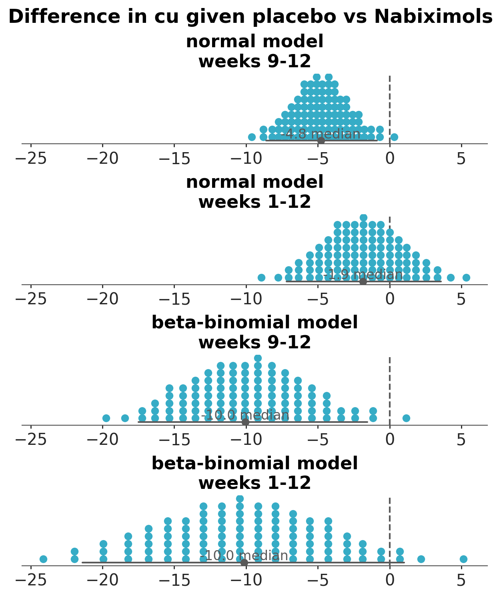
The normal models underestimate the magnitude of the change and are overconfident having much narrower posteriors. When we compare posteriors for effect in weeks 9-12 given the models which included week as a covariate, the conclusion about benefit of Nabiximols is the same with normal and beta-binomial model despite that the normal model underestimates the effect. When we compare posteriors for effect in weeks 1-12 given the models which did not include week as a covariate, the conclusion on benefit of Nabiximols is clearly different. In this case, we know based on LOO-CV comparisons and posterior predictive checking that the beta-binomial has much better performance and matches the data much better, and we can safely drop the normal models from consideration. The conclusions using the models with week as a covariate or all counts summed together are similar, although focusing in the last four week period gives sharper posterior which is plausible as the effect seems to be increasing in time.
The results here are illustrating that the choice of data model can matter for the conclusions, but also the best models shown here could be even further improved by using the additional data used by Lintzeris et al. (2020).
16 Predictive performance comparison
Above, posterior predictive checking, LOO predictive checking, and LOO-ELPD comparisons were important for model checking and comparison, and only after we trusted that there is no significant discrepancy between the model predictions and the data, we did look at the treatment effect. We used LOO model comparison to assess the the more elaborate models did provide better predictions, but we did not use it above for assessing the predictive performance of using the treatment effect in the model.
Let’s now build the mode without treatment group variable and check whether there is significant difference in predictive performance.
mod_betabinomial3b = bmb.Model(
"p(cu, set) ~ week + cu_baseline + (1|id)",
cu_df_b,
family="beta_binomial",
priors={
"Intercept": bmb.Prior("Normal", mu=0, sigma=9),
"week": bmb.Prior("Normal", mu=0, sigma=3),
"cu_baseline": bmb.Prior("Normal", mu=0, sigma=3),
}
)
idata_betabinomial3b = mod_betabinomial3b.fit(idata_kwargs={"log_likelihood": True}, random_seed=SEED)
mod_betabinomial3b.predict(idata_betabinomial3b, kind="response", inplace=True)Initializing NUTS using jitter+adapt_diag...
Multiprocess sampling (4 chains in 4 jobs)
NUTS: [kappa, Intercept, week, cu_baseline, 1|id_sigma, 1|id_offset]/home/osvaldo/anaconda3/envs/bwb/lib/python3.14/site-packages/rich/live.py:260: UserWarning: install "ipywidgets"
for Jupyter support
warnings.warn('install "ipywidgets" for Jupyter support')
/home/osvaldo/anaconda3/envs/bwb/lib/python3.14/site-packages/pymc/step_methods/hmc/integration.py:135: RuntimeWarning: invalid value encountered in subtract
energy = kinetic - logp
/home/osvaldo/anaconda3/envs/bwb/lib/python3.14/site-packages/pymc/step_methods/hmc/integration.py:135: RuntimeWarning: invalid value encountered in subtract
energy = kinetic - logp
/home/osvaldo/anaconda3/envs/bwb/lib/python3.14/site-packages/pymc/step_methods/hmc/integration.py:135: RuntimeWarning: invalid value encountered in subtract
energy = kinetic - logp/home/osvaldo/anaconda3/envs/bwb/lib/python3.14/site-packages/pymc/sampling/mcmc.py:1163: FutureWarning: Passing `log_likelihood` via `idata_kwargs` is deprecated and will be removed in future versions. Call `pm.compute_log_likelihood(idata)` instead.
return _sample_return(
Sampling 4 chains for 1_000 tune and 1_000 draw iterations (4_000 + 4_000 draws total) took 14 seconds.
The rhat statistic is larger than 1.01 for some parameters. This indicates problems during sampling. See https://arxiv.org/abs/1903.08008 for details
The effective sample size per chain is smaller than 100 for some parameters. A higher number is needed for reliable rhat and ess computation. See https://arxiv.org/abs/1903.08008 for details
/home/osvaldo/anaconda3/envs/bwb/lib/python3.14/site-packages/pytensor/link/numba/dispatch/basic.py:214: UserWarning: Numba will use object mode to run beta_binomial_rv{"(),(),()->()"}'s perform method. Set `pytensor.config.compiler_verbose = True` to see more details.
warnings.warn(# moment matching for betabinomial3bWe compare the models with and without group variable:
#loo_compare(fit_betabinomial2b, fit_betabinomial3b)
az.compare({
"betabinomial2b": idata_betabinomial2b,
"betabinomial3b": idata_betabinomial3b
})[["elpd_diff", "dse"]]/home/osvaldo/anaconda3/envs/bwb/lib/python3.14/site-packages/arviz_stats/loo/helper_loo.py:1146: UserWarning: Estimated shape parameter of Pareto distribution is greater than 0.70 for one or more samples. You should consider using a more robust model, this is because importance sampling is less likely to work well if the marginal posterior and LOO posterior are very different. This is more likely to happen with a non-robust model and highly influential observations.
warnings.warn(
/home/osvaldo/anaconda3/envs/bwb/lib/python3.14/site-packages/arviz_stats/loo/helper_loo.py:1146: UserWarning: Estimated shape parameter of Pareto distribution is greater than 0.70 for one or more samples. You should consider using a more robust model, this is because importance sampling is less likely to work well if the marginal posterior and LOO posterior are very different. This is more likely to happen with a non-robust model and highly influential observations.
warnings.warn(| elpd_diff | dse | |
|---|---|---|
| betabinomial3b | 0.0 | 0.0 |
| betabinomial2b | -2.0 | 2.3 |
There are a few high Pareto k values for PSIS-LOO even after moment matching, and for final results we would use also do reloo, but the conclusions are likely to be the same.
There is a negligible difference in predictive performance for predicting cannabis use in a 4-week period for a new person. This is probably due to:
- The actual effect not being very far from 0
- The aleatoric uncertainty (modelled by the beta-binomial) for a new 4-week period is big, that is the predictive distribution is very wide and due to the constrained range has also thick tails (actually U shape), which makes the log score not to be sensitive in tails.
As the predictive distribution is wide with thick tails, we can also focus on comparing absolute error of using means of the predictive distributions as point estimates. This approach has the benefit that we can improve accuracy of the finite MCMC sample by dropping the sampling from the varying intercept population distribution and from the beta-binomial distribution (using posterior_epred(, re_formula=NA). E_loo is used to go from posterior predictive draws to the mean of leave-one-out predictive distribution.
eloo2, _ = az.loo_expectations(idata_betabinomial2b, kind="mean")
eloo3, _ = az.loo_expectations(idata_betabinomial3b, kind="mean")
# Absolute errors
ae2 = np.abs(cu_df_b["cu"].values - eloo2.values)
ae3 = np.abs(cu_df_b["cu"].values - eloo3.values)/home/osvaldo/anaconda3/envs/bwb/lib/python3.14/site-packages/arviz_stats/loo/helper_loo.py:1146: UserWarning: Estimated shape parameter of Pareto distribution is greater than 0.70 for one or more samples. You should consider using a more robust model, this is because importance sampling is less likely to work well if the marginal posterior and LOO posterior are very different. This is more likely to happen with a non-robust model and highly influential observations.
warnings.warn(
/home/osvaldo/anaconda3/envs/bwb/lib/python3.14/site-packages/arviz_stats/loo/helper_loo.py:1146: UserWarning: Estimated shape parameter of Pareto distribution is greater than 0.70 for one or more samples. You should consider using a more robust model, this is because importance sampling is less likely to work well if the marginal posterior and LOO posterior are very different. This is more likely to happen with a non-robust model and highly influential observations.
warnings.warn(Probability that the leave-one-out predictive absolute error is smaller with model 2b (with group variable) than with model 3b (without group variable) using normal approximation.
# TODO This results it Wrong
pz.Normal(np.mean(ae2 - ae3), np.std(ae2 - ae3) / 257**0.5).cdf(0)array(0.04893655)By dropping out the aleatoric part from the LOO-CV predictions we do see clear difference in the predictive performance if the treatment group variable is dropped, but still the randomness in the actual observations makes the probability of the difference to be further away from 1 than when we focused in the expected counterfactual predictions above.
References
Lintzeris, Nicholas, Anjali Bhardwaj, Llewellyn Mills, Adrian Dunlop, Jan Copeland, Iain McGregor, Raimondo Bruno, et al. 2019. “Nabiximols for the Treatment of Cannabis Dependence: A Randomized Clinical Trial.” JAMA Internal Medicine 179 (9): 1242–53.
Lintzeris, Nicholas, Llewellyn Mills, Adrian Dunlop, Jan Copeland, Iain Mcgregor, Raimondo Bruno, Adrienne Kirby, et al. 2020. “Cannabis Use in Patients 3 Months After Ceasing Nabiximols for the Treatment of Cannabis Dependence: Results from a Placebo-Controlled Randomised Trial.” Drug and Alcohol Dependence 215 (108220).
Licenses
- Code © 2024, Aki Vehtari, licensed under BSD-3.
- Text © 2024, Aki Vehtari, licensed under CC-BY-NC 4.0.